अभी लिखो उपयोगकर्ता मार्गदर्शिका
संस्करण 0.9.37
अपने विचार नोट्स में, दिन की योजनाएँ कार्य सूची में और खरीदारी की चीज़ें शॉपिंग सूची में लिखें। यह मार्गदर्शिका सेटिंग्स के “उपयोगकर्ता मार्गदर्शिका” कार्ड से कभी भी खोल सकते हैं।
1. पहला उपयोग और स्क्रीन कॉन्फ़िगरेशन
अभी लिखो एक ऐप है जो विषय के अनुसार ड्रॉअर में नोट्स एकत्र करता है। जब आप ड्रॉअर पर टैप करते हैं, तो नोट्स की एक सूची खुल जाती है, और जब आप किसी मेमो पर टैप करते हैं, तो सामग्री लिखने के लिए एक स्क्रीन खुल जाती है।
हेडर में टूल ढूंढें
ऊपर का खोज बटन सभी दराजों में खोजता है। मेन्यू (☰) में नया दराज, दराज आयात, उपयोगकर्ता पुस्तिका, सेटिंग और ट्रैश हैं। अलमारी का नाम दिखाई देता रहता है।
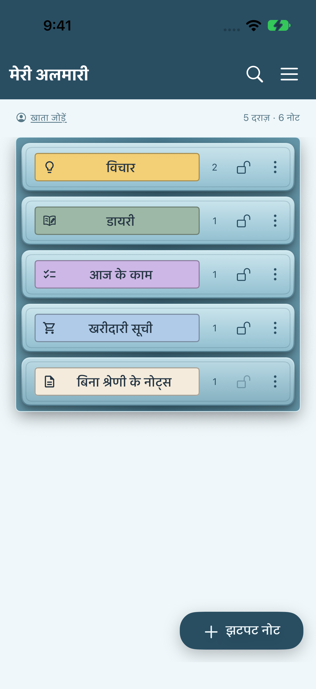
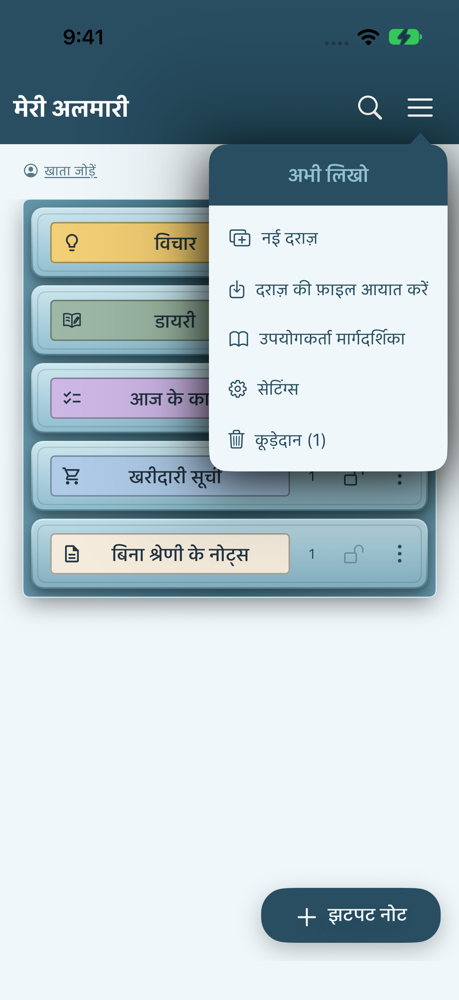
अपना पहला नोट बनाएं
मेन्यू (☰) → नया दराज चुनें, नाम दें और दराज खोलकर ＋ नया नोट चुनें। लेखन अपने आप सहेजा जाता है।
इसे तुरंत लिखने के लिए, स्क्रीन के नीचे ＋ झटपट नोट दबाएँ। आप एक अवर्गीकृत मेमो से शुरू करते हैं, और आप मेमो हेडर में ड्रॉअर नाम का उपयोग करके उस ड्रॉअर का चयन कर सकते हैं जिसमें आप इसे सहेजना चाहते हैं।
मुझे किस दराज का उपयोग करना चाहिए?
| दराज | उपयोग |
|---|---|
| नियमित दराज | हम विचार, यात्रा और कार्य जैसे विषय के आधार पर लेख, फ़ोटो, चित्र और फ़ाइलें एकत्र करते हैं। |
| डायरी | दिनांक के अनुसार नोट्स रखें और उन्हें कैलेंडर या लॉग सूची पर वापस पढ़ें। |
| आज के काम | दिनांक, समय, सूचनाओं, दोहराव कार्यक्रम और पूर्णता की स्थिति के अनुसार कार्यों को प्रबंधित करें। |
| खरीदारी सूची | प्रत्येक किराने की वस्तु के लिए आइटम, मात्रा और खरीद की स्थिति प्रबंधित करें। |
| बिना श्रेणी के नोट्स | कोई भी नोट इकट्ठा करें जिसके लिए आपने अभी तक दराज का चयन नहीं किया है। |
दराजों के संदूक का नाम बदलें
मेन्यू → सेटिंग → अलमारी खोलें और नाम बदलें। नाम खाली नहीं होना चाहिए और अधिकतम 40 अक्षर हो सकते हैं। इसी कार्ड में नीचे थीम चुनें।
चौड़ी स्क्रीन और पूर्ण स्क्रीन
चौड़ी iPad स्क्रीन पर बाईं ओर दराज़ चुनें। सूची या नोट दाईं ओर खुलता है। सामग्री को फैलाने के लिए पूर्ण स्क्रीन बटन दबाएँ।
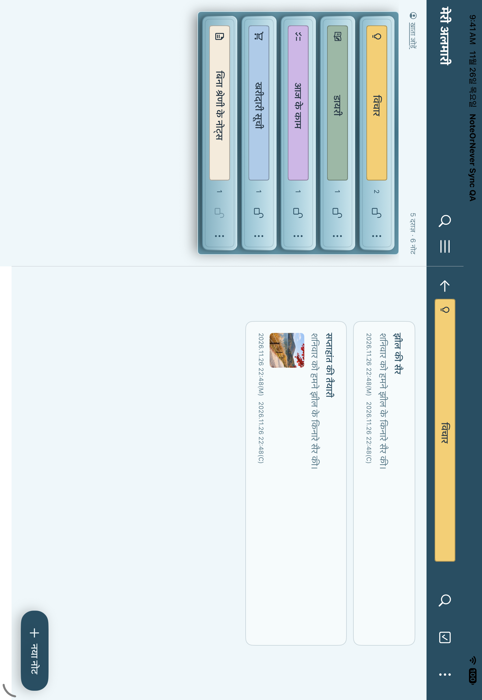
2. दराज बनाना और प्रबंधित करना
नई दराज़ के लिए उपलब्ध होने पर ऐसा लेबल रंग चुना जाता है जो पहले इस्तेमाल नहीं हुआ है। रंग पर छोटा निशान बताता है कि दूसरी दराज़ उसे इस्तेमाल करती है। फिर भी वह रंग चुन सकते हैं।
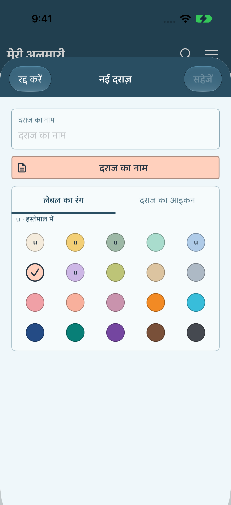
एक दराज बनाएं
मेन्यू (☰) → नया दराज चुनें। दराज की फ़ाइल के लिए इसी मेन्यू में आयात चुनें।
नाम, लेबल का रंग और आइकन बदलें
दराज के दाईं ओर और देखें(…) पर क्लिक करें और दराज सेटिंग्स चुनें। नाम बदलें, एक रंगीन वृत्त या आइकन चुनें और इसे सहेजें बनाएं। लेबल ड्रॉअर नाम के साथ चयनित आइकन प्रदर्शित करता है। नाम स्थान के भीतर लंबे नाम प्रवाहित होते हैं।
अधिक अवर्गीकृत नोट देखने से सीधे ड्रॉअर सेटिंग खुल जाती है। लॉकिंग और एन्क्रिप्शन अध्याय 11 द्वारा निर्देशित होते हैं।
दराज का क्रम बदलें
दराज को दबाकर रखें और इसे वांछित स्थान पर ऊपर या नीचे खींचें। अवर्गीकृत नोटों का स्थान निश्चित है.
एक दराज हटाएँ
दराज हटाने पर नोट मूल दराज और संलग्नक सहित ट्रैश में जाते हैं। पहले से हटाए गए नोटों का समय नहीं बदलता। एन्क्रिप्टेड दराज प्रमाणीकरण के बाद भी सुरक्षित रहता है। मूल दराज न होने पर साधारण नोट असंगठित नोटों में और एन्क्रिप्टेड नोट उसी ID वाले पुनर्प्राप्त सुरक्षित दराज में लौटता है। अन्य ट्रैश नोट वहीं रहते हैं।
एक समर्पित दराज पुनः बनाएँ
डायरी, टू डू टुडे और शॉपिंग लिस्ट अपने विशिष्ट कार्य बनाए रखते हैं, भले ही आप नाम या आइकन बदल दें। हटाए गए समर्पित ड्रॉअर सेटिंग्स → समर्पित दराज में बनाए जा सकते हैं। पुराने नोट स्वचालित रूप से नव निर्मित समर्पित दराज में वापस नहीं आएंगे।
↑ सामग्री की तालिका के लिए3. नोट्स लिखें और संपादित करें
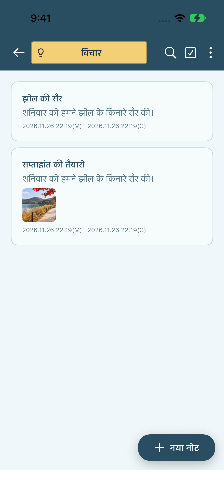
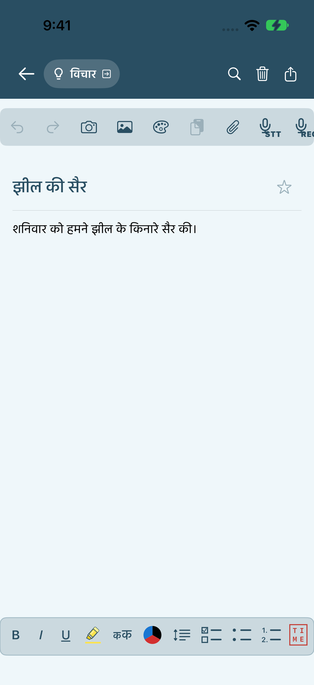
नए नोट और ऑटो-सेव
＋ दराज में नया नोट वर्तमान दराज में एक नोट बनाता है। ＋ त्वरित मेमो एक अवर्गीकृत मेमो से शुरू होता है, और पहली बार सहेजने से पहले, आप हेडर में ड्रॉअर नाम दबाकर सहेजने के लिए ड्रॉअर का चयन कर सकते हैं और चयन बटन से पुष्टि कर सकते हैं। जब आप आज की टू-डू या खरीदारी सूची का चयन करते हैं, तो यह उस ड्रॉअर से मेल खाने वाले सूची प्रारूप में बदल जाती है।
आपके द्वारा दर्ज किया गया कोई भी परिवर्तन बिना सेव बटन के स्वचालित रूप से सहेजा जाएगा। आप सूची पर वापस जाकर आपने जो लिखा है उसे दोबारा खोल सकते हैं। बस कुछ भी दर्ज किए बिना नया मेमो बंद करें। पहले से सहेजे गए मेमो का शीर्षक या मुख्य भाग हटाना सामग्री को संपादित करना है। नोट से छुटकारा पाने के लिए इसे कूड़ेदान में ले जाएं। यदि कोई सेव विफलता संदेश दिखाई देता है, तो जानकारी जांचें और पुनः प्रयास करें।
सूची क्रमबद्ध करें
आज के कार्य और डायरी संपादन समय के बजाय रिकॉर्ड की तारीख से क्रमबद्ध होते हैं। नई या पुरानी तारीख पहले चुनें। आज के कार्य में महत्वपूर्ण चिह्न तारीख का क्रम नहीं बदलता।
महत्वपूर्ण नोट्स चिह्नित करें
यदि आप शीर्षक के दाईं ओर प्रकाश तारा (☆) पर क्लिक करते हैं, तो यह एक भरे हुए तारे (★) में बदल जाएगा। इसे बंद करने के लिए फिर से दबाएँ। आप महत्वपूर्ण नोट्स को पहले सेटिंग्स → नोट्स व्यू में प्रदर्शित कर सकते हैं। आज के कार्य नोट्स का दिनांक शीर्षक नोट स्टार प्रदर्शित नहीं करता है। किसी सूची आइटम के बाद एक सितारा उस कार्य या आइटम के महत्व को दर्शाता है।
दूसरे दराज में ले जाएँ
- एक नियमित नोट खोलें और हेडर में ड्रॉअर नाम के आगे मूव आइकन दबाएं।
- उस नियमित दराज का चयन करें जिसे आप स्थानांतरित करना चाहते हैं और मूव बटन दबाएँ। अकेले चयन करें नहीं चलता है, और रद्द करने से वर्तमान ड्रॉअर बना रहता है। सुरक्षा को लॉक करने या हटाने के लिए कहे जाने पर पुष्टि करें।
आज के कार्य, खरीदारी सूची और डायरी में नोट्स को सीधे किसी अन्य दराज में नहीं ले जाया जा सकता है, और स्थानांतरण आइकन प्रदर्शित नहीं होता है। एक साथ कई नोट कैसे स्थानांतरित करें, इसकी जानकारी के लिए एकाधिक नोट चुनें देखें।
नोट संपादन टूलबार आइकन गाइड
सामान्य नोट्स के लिए टूलबार नीचे दिया गया है। प्रकाश चिह्न वर्तमान में अनुपलब्ध हैं. फ़ॉन्ट फ़ॉर्मेटिंग के लिए सबसे पहले उस टेक्स्ट का चयन करें जिसे बदलना है और फिर उसे लागू करें। आज की टू-डू/शॉपिंग सूची के लिए समर्पित टूल अध्याय 6 और अध्याय 8 में बताए गए हैं।
शीर्ष टूलबार: पूर्ववत करें, संलग्न करें, ध्वनि
| आइकन | नाम | आप क्या करते हैं |
|---|---|---|
| पहले जैसा करें | वर्तमान संपादन के दौरान बदली गई पाठ्य सामग्री को उसकी पिछली स्थिति में वापस लाता है। यदि वापस करने के लिए कुछ नहीं है, तो इसे हल्के रंग में प्रदर्शित किया जाएगा। | |
 | फिर से करें | उल्टे शरीर परिवर्तन को पुनः लागू करता है। यदि दोबारा लगाने के लिए कुछ नहीं है, तो इसे हल्के रंग में प्रदर्शित किया जाएगा। |
| कैमरा | एक नई फ़ोटो लें और उसे मेमो के साथ संलग्न करें. | |
 | फ़ोटो | अपने फोन से एक फोटो चुनें और संलग्न करें। |
| चित्रकारी | एक सफेद कैनवास पर एक चित्र बनाएं और उसे एक नोट में लिखें। | |
 | फ़ाइल जोड़ें | एक फ़ाइल चुनें और उसे नोट के साथ संलग्न करें. यदि आप संलग्न फ़ाइल को टैप करते हैं, तो आप इसे किसी समर्थित ऐप से खोल सकते हैं। |
 | ध्वनि इनपुट | आपने जो कहा उसे अक्षरों में दर्ज करें। इसे शीर्षक या पाठ में उस स्थान पर रखा जाता है जहां ध्वनि इनपुट शुरू हुआ था, और यदि कोई चयनित वर्ण है तो उसे प्रतिस्थापित कर देता है। |
 | रिकार्ड संलग्न है | अपनी आवाज या ध्वनि रिकॉर्ड करें और इसे एक ऑडियो फ़ाइल के रूप में संलग्न करें। STT के विपरीत, इसे अक्षरों में परिवर्तित नहीं किया जाता है। |
निचला टूलबार: फ़ॉन्ट प्रारूप, सूची, दिनांक
| आइकन | नाम | आप क्या करते हैं |
|---|---|---|
 | बोल्ड | चयनित टेक्स्ट को बोल्ड में प्रदर्शित करता है। बोल्ड डिस्प्ले बंद करने के लिए फिर से दबाएँ। |
 | बख्शीश | चयनित पाठ को झुकाता है. इसे बंद करने के लिए फिर से दबाएँ। |
 | बल देना | चयनित अक्षरों को रेखांकित करता है. इसे बंद करने के लिए फिर से दबाएँ। |
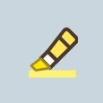 | हाइलाइट | चयनित पाठ पर ज़ोर देने के लिए उसके पीछे एक पीला पृष्ठभूमि जोड़ता है। |
 | फ़ॉन्ट आकार | फ़ॉन्ट आकार मेनू खोलें और इसे घटाकर A− कर दें या इसे A+ तक बढ़ा दें। सबसे पहले उस अक्षर का चयन करें जिसे आप बदलना चाहते हैं। |
 | फ़ॉन्ट रंग | काले, लाल या नीले रंग में से फ़ॉन्ट रंग चुनें। |
 | पंक्ति रिक्ति | मुख्य पाठ में पंक्ति रिक्ति बढ़ाएँ या घटाएँ। यह फ़ॉन्ट आकार बदलने के फ़ंक्शन से भिन्न है। |
 | चेकबॉक्स सूची | वर्तमान लाइन को चेक सूची में बदल देता है या चेक सूची को अनफ़ॉर्मेट कर देता है। आप चेकबॉक्स पर क्लिक करके पूर्णता को चिह्नित कर सकते हैं। |
 | बुलेट सूची | वर्तमान लाइन को एक बिंदु से शुरू होने वाली सूची से बदल देता है। |
 | क्रमांकित सूची | वर्तमान पंक्ति को संख्याओं की सूची से बदल देता है। अगले आइटम के लिए नंबर स्वचालित रूप से जारी रहते हैं। |
 | TIMESTAMP | पाठ में कर्सर की स्थिति पर वर्तमान दिनांक और समय सम्मिलित करता है। |
जब आप कर्सर को शीर्षक पर रखते हैं, तो टेक्स्ट फ़ॉर्मेटिंग टूलबार छिप जाता है, और जब आप टेक्स्ट पर क्लिक करते हैं तो यह फिर से दिखाई देता है। यदि आपकी स्क्रीन संकीर्ण है, तो आप अन्य टूल देखने के लिए टूलबार को बाएँ या दाएँ स्लाइड कर सकते हैं। पूर्ण स्क्रीन में, आप टूलबार को ऊपर या नीचे दोनों तरफ स्लाइड कर सकते हैं।
चेकबॉक्स, बुलेट या संख्या सूची में से केवल एक ही प्रारूप एक पंक्ति पर लागू होता है। जब आप कोई भिन्न सूची बटन दबाते हैं तो प्रारूप बदल जाता है। जब आप किसी संख्या सूची में Enter दबाते हैं, तो अगला नंबर जारी रहता है, और जब आप किसी खाली आइटम पर Enter दबाते हैं, तो सूची समाप्त हो जाती है। शीर्षक, मुख्य भाग और अनुलग्नकों पर प्रतिबंध क्षमता और लंबाई सीमाएँ पर जांचे जा सकते हैं।
↑ सामग्री की तालिका के लिए4. फ़ोटो, चित्र और फ़ाइलें संलग्न करें और साझा करें
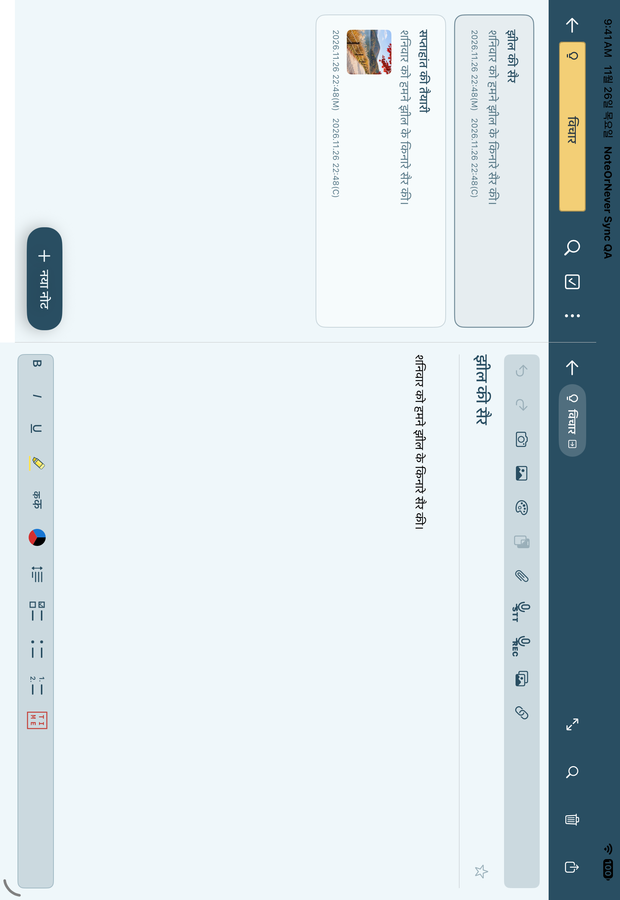
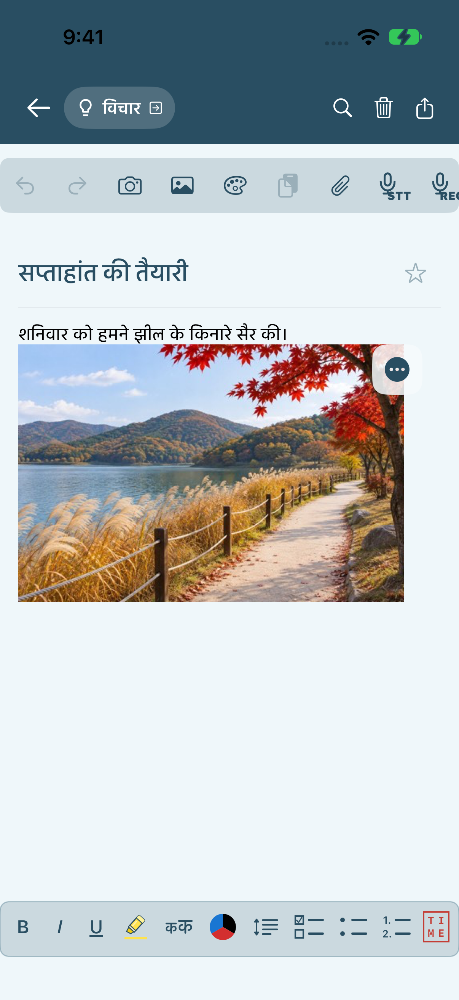
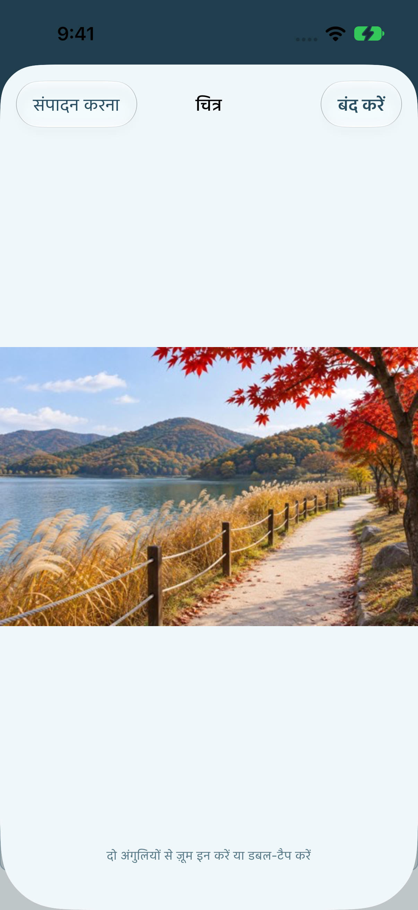
फ़ोटो, रिकॉर्डिंग और फ़ाइलें सम्मिलित करें
सामान्य मेमो के शीर्ष टूलबार से, कैमरा, फोटो, पेंट, फ़ाइल संलग्न करें, रिकॉर्डिंग संलग्न करें का चयन करें। आवश्यक डिवाइस अनुमतियाँ दें और एक चित्र लें या एक फ़ाइल चुनें। कृपया प्रत्येक टूल के कार्यों और वॉयस इनपुट/रिकॉर्डिंग अटैचमेंट में अंतर के लिए टूलबार जानकारी संपादित करने पर ध्यान दें देखें।
फ़ोटो और चित्रों का स्थान बदलें
फोटो के ऊपरी दाएं कोने में अधिक (...) पर क्लिक करके स्थिति बदलें → ऊपर जाएं या नीचे जाएं। आप फ़ोटो को लंबे समय तक दबाकर भी रख सकते हैं और उसे ऊपर या नीचे खींच सकते हैं। दिखाई गई रेखा वह है जहां आप इसे रखेंगे, और जब आप इसे स्क्रीन के किनारे पर खींचेंगे तो यह स्वचालित रूप से स्क्रॉल हो जाएगी। वर्तमान में संपादन करते समय, आप पूर्ववत करके स्थानांतरण को पूर्ववत कर सकते हैं।
अनुलग्नक को दूसरे नोट पर ले जाएँ
- तस्वीरें, चित्र, रिकॉर्डिंग और सामान्य फ़ाइलें जिन्हें स्थानांतरित किया जाना है... मेनू में, किसी अन्य नोट पर ले जाएं पर टैप करें।
- उस नियमित दराज का चयन करें जिसमें वह नोट है जिसे आप प्राप्त करना चाहते हैं। यदि आवश्यक हो तो अनलॉक या डिक्रिप्ट करें।
- वह नोट चुनें जिसे आप प्राप्त करना चाहते हैं और Go दबाएँ। आप खोज कर किसी नोट का शीर्षक भी पा सकते हैं।
एक बार में एक अटैचमेंट स्थानांतरित करें। यह मूल नोट से हटकर गंतव्य नोट के अंत में जुड़ता है। डायरी, आज के कार्य, खरीदारी सूची और बैकअप जैसे विशेष दराज स्रोत या गंतव्य नहीं हो सकते। एन्क्रिप्टेड दराज से बिना एन्क्रिप्शन वाले दराज में ले जाते समय सुरक्षा में बदलाव की सूचना पढ़ें। स्थानांतरण या प्रमाणीकरण रद्द करने पर अटैचमेंट मूल नोट में ही रहता है।
मूल नोट खुला रहने तक, ऊपर के टूलबार में पूर्ववत करें से अटैचमेंट को उसकी मूल जगह पर वापस लाएँ। फिर से लागू करें से उसे दोबारा स्थानांतरित करें। पहले किए गए संपादन भी पूर्ववत इतिहास में बने रहते हैं। ज़रूरत पड़ने पर लॉक खोलने या एन्क्रिप्शन का प्रमाणीकरण फिर माँगा जाता है। प्रमाणीकरण रद्द करने या प्रक्रिया विफल होने पर दोनों नोट अपरिवर्तित रहते हैं और आप बाद में फिर कोशिश कर सकते हैं। नोट बंद करने पर उस सत्र का पूर्ववत इतिहास मिट जाता है।
बड़ा देखें और घुमाएँ
किसी फ़ोटो या चित्र को बड़ा करके खोलने के लिए उस पर क्लिक करें। ज़ूम इन या ज़ूम आउट करने के लिए दो अंगुलियों का उपयोग करें, या ज़ूम इन करने के लिए डबल टैप करें। यदि आप रोटेशन बटन के साथ दिशा बदलते हैं और इसे सहेजते हैं, तो नोट में मौजूदा अनुलग्नकों को घुमाई गई छवियों से बदल दिया जाएगा। सहेजा नहीं जाएगा और यदि आप इसे बंद करते हैं, तो रोटेशन लागू नहीं किया जाएगा। यह आपके फ़ोन की मूल गैलरी को नहीं बदलेगा.
तस्वीरें खींचना और चिह्नित करना
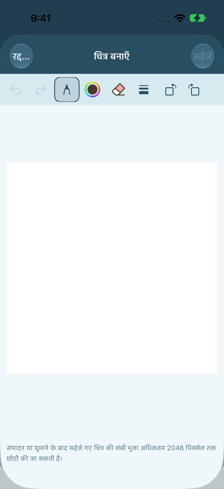
- शीर्ष टूलबार में पेंट से एक खाली ड्राइंग शुरू होती है। इसे किसी फ़ोटो पर प्रदर्शित करने के लिए, इसे बड़ा करके खोलें और संपादित करें पर टैप करें।
- एक रंग चुनें, नीचे स्लाइडर का उपयोग करके पेन की मोटाई निर्धारित करें, और कैनवास पर चित्र बनाएं।
- जब आप इरेज़र चालू करते हैं, तो स्लाइडर इरेज़र के आकार में बदल जाता है। इरेज़र को फिर से बंद करें या पेन पर लौटने के लिए एक रंग चुनें।
- वर्तमान चित्र के स्ट्रोक्स को पूर्ववत/पुनः करें के साथ समायोजित करें।
- जब रिक्त चित्र पूरा हो जाएगा, तो कॉपी के रूप में सहेजें पर क्लिक करने पर फोटो संपादन नोट में संलग्न हो जाएगा। बाएँ X के साथ बंद करने और परिवर्तनों को त्यागने से वे सहेजे नहीं जाएँगे।
यदि आप किसी फोटो को ओवरराइट करके सेव करते हैं, तो नए अनुलग्नक की एक प्रति जोड़ी जाती है और मौजूदा अनुलग्नक बना रहता है। यदि आपको सेव की गई कॉपी पसंद नहीं है, तो कॉपी हटा दें। एक बार सहेजने के बाद, पिछले संपादन को पूर्ववत करके उस प्रतिलिपि के स्ट्रोक को मिटाया नहीं जा सकता है। संपादन/घूर्णन और सहेजने की प्रक्रिया के दौरान रिज़ॉल्यूशन कम हो सकता है, इसलिए उच्च-रिज़ॉल्यूशन मूल को अलग रखें।
आप बड़े प्रारूप में रीड-ओनली मैनुअल और पिछली डायरियों की तस्वीरें भी देख सकते हैं। केवल पढ़ने योग्य स्थिति में आवर्धित स्क्रीन केवल बंद करें बटन प्रदर्शित करती है।
पीडीएफ के रूप में साझा करें
- एक नोट खोलें और हेडर में शेयर बटन दबाएँ।
- एंड्रॉइड शेयरिंग विंडो में, वांछित ऐप और प्राप्तकर्ता का चयन करें, जैसे काकाओटॉक।
शीर्षक, मुख्य भाग, पाठ प्रारूप, फ़ोटो और तस्वीरें पीडीएफ के रूप में भेजें। प्राप्तकर्ता इसे अभी लिखो के बिना पढ़ सकते हैं। रिकॉर्ड की गई और सामान्य फ़ाइलें केवल नाम और प्रकार प्रदर्शित करती हैं, और मूल फ़ाइल पीडीएफ में शामिल नहीं है। यदि आप साझाकरण विंडो बंद करते हैं, तो इसे नहीं भेजा जाएगा। भेजा गया पीडीएफ साझाकरण के समय एक प्रति है और नोट में बाद के किसी भी संपादन को प्रतिबिंबित नहीं करता है।
↑ सामग्री की तालिका के लिए5. एक डायरी रखें
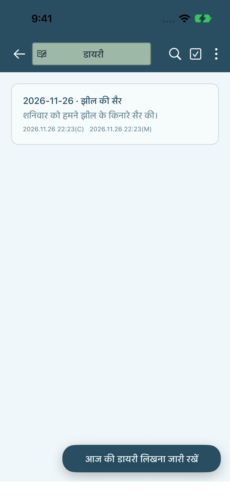
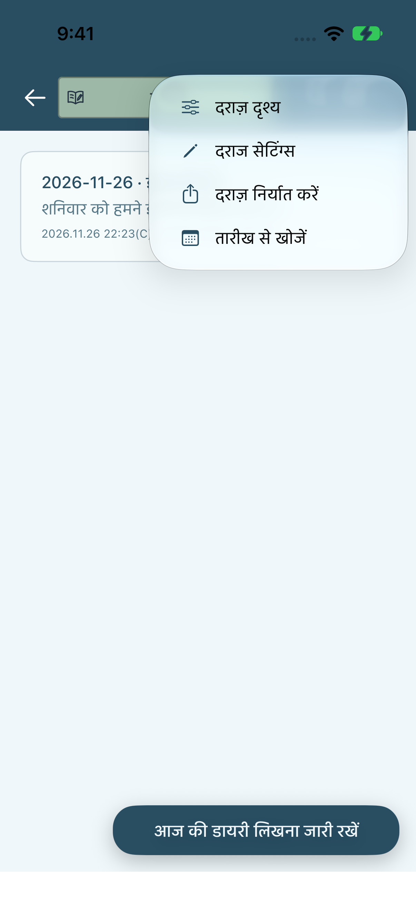
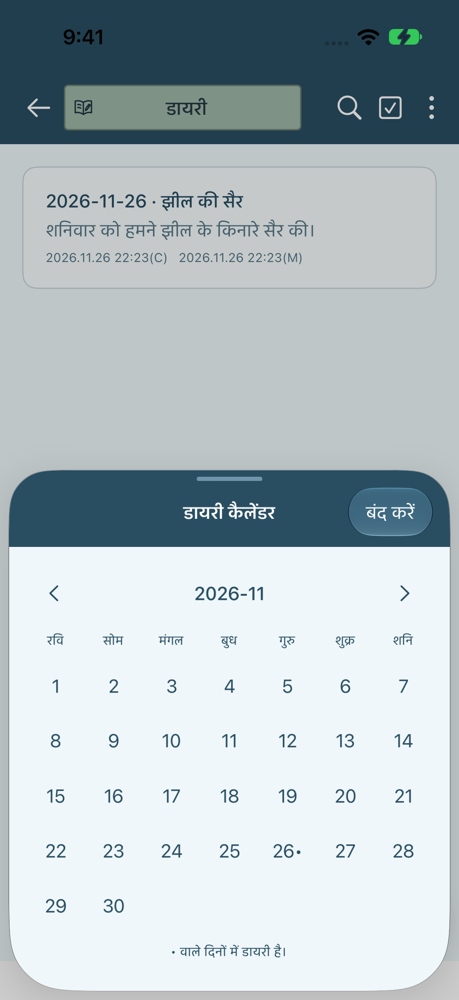
आज का रिकॉर्ड जारी रखें
जब मैं डायरी की दराज खोलता हूं, तो मैं आज के रिकॉर्ड लिखना जारी रखता हूं। दिनांक स्वचालित रूप से प्रदर्शित होती है और एक संक्षिप्त शीर्षक अलग से लिखा जा सकता है। जब आप पहली बार जानकारी दर्ज करते हैं, तो वह सहेज ली जाती है, और उन दिनों तक खाली नोट नहीं बनाए जाते जब आपने कुछ भी रिकॉर्ड नहीं किया हो।
पिछले अभिलेखों को पढ़ना और संपादित करना
कैलेंडर आइकन से रिकॉर्ड वाला एक दिन चुनें या इसे रिकॉर्ड सूची से खोलें। पिछले रिकॉर्ड केवल पढ़ने के लिए हैं, लेकिन आप फ़ोटो पर ज़ूम कर सकते हैं, उन्हें महत्वपूर्ण के रूप में चिह्नित कर सकते हैं, उन्हें साझा कर सकते हैं और उन्हें ट्रैश में ले जा सकते हैं।
जब आप अनलॉक एडिट दबाते हैं, तो हम आपको मार्गदर्शन देंगे कि उस दिन के रिकॉर्ड को संरक्षित करने का क्या मतलब है। नहीं, इसे केवल पढ़ने के लिए ही रखता है, और संपादन वर्तमान में खुले रिकॉर्ड के संपादन की अनुमति देता है। अगर मैं इसे बंद कर दूं और दोबारा खोलूं, तो यह वापस केवल-पढ़ने के लिए चला जाता है। आधी रात के बाद भी, आपके द्वारा पहले ही लिखे गए रिकॉर्ड तब तक सहेजे जा सकते हैं जब तक आप स्क्रीन बंद नहीं कर देते।
डायरियाँ सीधे अन्य दराजों में नहीं जातीं। भले ही आप इसे रीसायकल बिन से पुनर्स्थापित करें, यह अपनी इतिहास तिथि बरकरार रखेगा। ड्रॉअर का नाम बदलने और पुनः बनाने के लिए, दराज बनाना और प्रबंधित करना देखें।
↑ सामग्री की तालिका के लिए6. आज के कार्य, समय, अधिसूचना और दोहराव सेटिंग्स
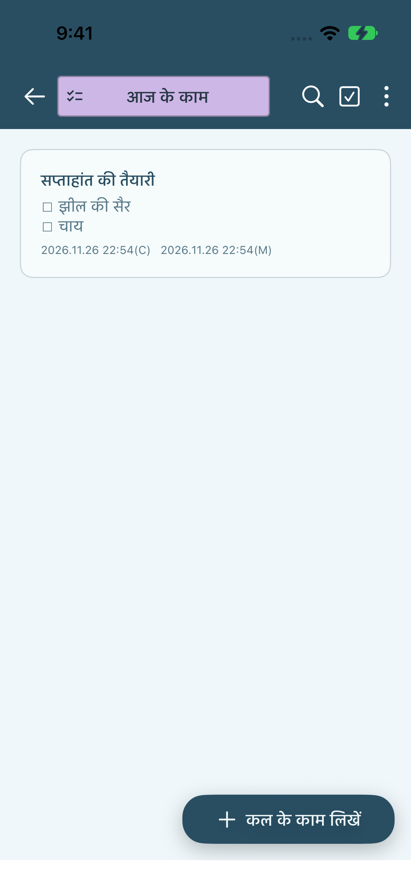
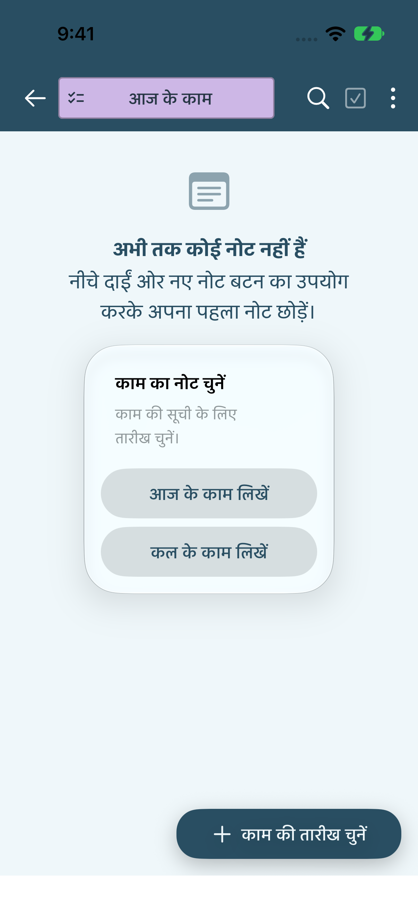
आज या कल की सूची बनाएँ और हटाई गई सूची बहाल करें
दोनों तारीखों की सूची न होने पर ＋ से आज या कल चुनें। केवल एक तारीख की सूची न होने पर उसी का बटन दिखता है; दोनों में सामग्री होने पर बटन छिपता है। खाली चेकबॉक्स को सूची नहीं माना जाता, लेकिन अटैचमेंट को माना जाता है। खोज फ़िल्टर इस नियम को नहीं बदलते। कल की सूची बनाने से आज के अधूरे काम पहले नहीं जाते।
तारीख वाली सूची हटाने पर मूल और अटैचमेंट कूड़ेदान में रहते हैं। दोहराव और अपने आप आगे भेजना उस हटाई हुई तारीख को फिर नहीं बनाते। खुद बनाने पर नई सूची शुरू होती है। उसी तारीख की दूसरी सूची होने पर मूल बहाल करने से पहले उसे कूड़ेदान में डालें। एक साथ बहाल करते समय टकराव वाली सूचियाँ चुनी रहती हैं। पुराने ओवरराइट किए मूल केवल स्थानीय प्रमाण मिलने पर पुनर्प्राप्त होते हैं; केवल मौजूद अटैचमेंट फ़ाइलें कॉपी हो सकती हैं।
आइटम को महत्वपूर्ण के रूप में जोड़ें/किया/चिह्नित करें
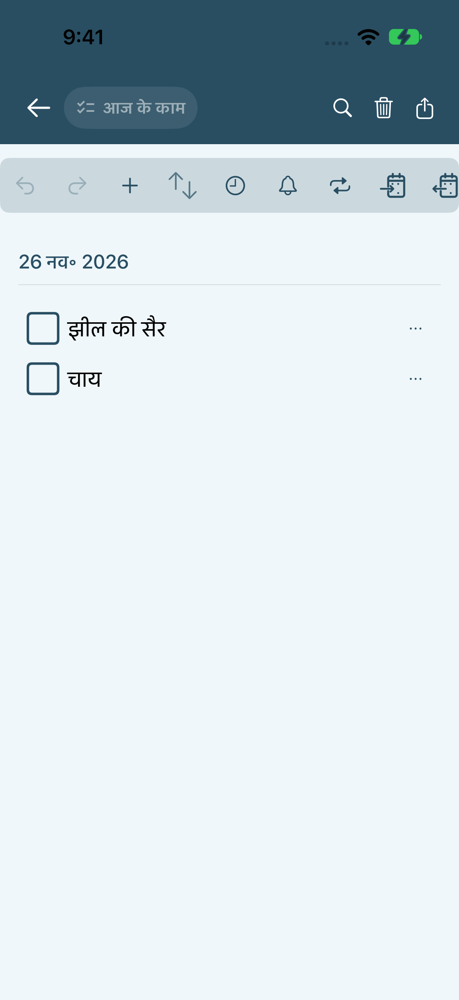
- आइटम जोड़ें (+): एक नया कार्य जोड़ें। आप आइटम का नाम भी लिख सकते हैं और अगला आइटम जारी रखने के लिए Enter दबा सकते हैं।
- चेक बॉक्स: परिवर्तन पूर्ण और अपूर्ण। पूर्ण किए गए आइटम में स्ट्राइकथ्रू होगा।
- दाईं ओर और आइटम देखें (...): ओपन टाइम सेटिंग्स · नोटिफिकेशन सेटिंग्स · रिपीट सेटिंग्स · प्राथमिकता चिह्न · आइटम हटाएं।
- नोट को तारांकित करें: आइटम मेनू में हाइलाइटिंग को चालू या बंद करता है। महत्वपूर्ण वस्तुओं को सितारों से चिह्नित किया जाता है। यह दिनांक शीर्षक में तारे से अलग है।
- आइटम हटाएँ: केवल एक चयनित पंक्ति हटाता है। दोहराए गए आइटम को साफ़ करने से भविष्य में दोहराव भी रुक जाएगा। इसे हेडर में ट्रैश कैन बटन से अलग करें, जो पूरे नोट को हटा देता है।
इसे शीर्ष टूल से सेट करने के लिए सबसे पहले जिस आइटम को बदलना है उसके अक्षर पर क्लिक करके कर्सर रखें। घड़ी, घंटी और रिपीट बटन वर्तमान आइटम पर लागू होते हैं। जो उपकरण उपलब्ध नहीं हैं वे धूसर हो गए हैं। यदि आप सभी टूल नहीं देख पा रहे हैं, तो टूलबार को बाएँ या दाएँ स्लाइड करने का प्रयास करें।
आइटम पुनः व्यवस्थित करें
शीर्ष पर ओवरलैपिंग ऊपर और नीचे तीर वाले आइटम के लिए मूवमेंट मोड चालू करें। आइटम के बगल में दिखाई देने वाले मूवमेंट हैंडल को दबाकर रखें और इसे ऊपर या नीचे खींचें। जब आपका काम पूरा हो जाए, तो लेखन मोड पर लौटने के लिए उसी बटन को दोबारा दबाएं।
एक निर्धारित समय निर्धारित करें
- आइटम के दाईं ओर... → समय सेट करें दबाएँ। वैकल्पिक रूप से, अपने कर्सर को किसी आइटम पर घुमाएँ और शीर्ष घड़ी बटन दबाएँ।
- एक समय निर्धारित करें और पुष्टि करें। आइटम निर्धारित समय प्रदर्शित करेगा.
- इससे छुटकारा पाने के लिए, टाइम सेटिंग्स को फिर से खोलें और कोई समय नहीं पर टैप करें।
केवल समय निर्धारित करने से अधिसूचना ट्रिगर नहीं होती। यदि आप सूचनाएं चाहते हैं, तो उन्हें अलग से सेट करें।
सूचनाएं प्राप्त करें
- आइटम के दाईं ओर... → रिमाइंडर सेटिंग दबाएँ।
- यदि आपके पास एक निर्धारित समय है, तो घंटे, 10 मिनट पहले, या 30 मिनट पहले सूचनाओं का चयन करें। यदि आपके पास कोई निर्धारित समय नहीं है या आप इसे अलग समय पर प्राप्त करना चाहते हैं, तो रिमाइंडर का समय चुनें का उपयोग करें।
- बचाना। यदि आपका उपकरण अधिसूचना की अनुमति मांगता है, तो उसे प्रदान करें। जब आपको सही अधिसूचना अनुमति निर्देश प्राप्त हों, तो डिवाइस सेटिंग्स भी जांचें।
चयनित समय बिंदु बाईं ओर वृत्त में प्रदर्शित होता है। आवश्यक अनुमतियाँ और अधिसूचना क्रियाएँ चयन सूची के नीचे वर्णित हैं। इसे बंद करने के लिए, कोई रिमाइंडर नहीं चुनें। यदि आप कोई निर्धारित समय हटाते हैं, तो उस समय पर आधारित सूचनाएं भी अक्षम हो जाएंगी। आपके द्वारा निर्दिष्ट अधिसूचना समय अलग से प्रबंधित किया जाता है। किसी आवर्ती आइटम के लिए सेट की गई सूचनाएं भविष्य की पुनरावृत्तियों पर भी लागू होंगी।
सूचनाएं कार्य-सामग्री के बजाय पुष्टिकरण निर्देश प्रदर्शित करती हैं। आपके डिवाइस की अधिसूचना और बिजली बचत सेटिंग्स के आधार पर आगमन में देरी हो सकती है। कैलेंडर ईवेंट सूचनाएं और ऐप सूचनाएं अलग-अलग हैं, इसलिए कृपया अध्याय 7 भी जांचें।
अपूर्ण वस्तुओं का क्या होता है?
बिना दोहराव या कैलेंडर लिंक वाले अधूरे कार्य अगले दिन जाते हैं। महत्व, समय, अलर्ट, मात्रा और आगे ले जाने की गिनती सुरक्षित रहते हैं। एक जैसे नाम वाले नए कार्य अलग हैं। पूरे और दोहराए जाने वाले कार्य, स्थानांतरण इतिहास और संलग्नक मूल दिन में रहते हैं। हटाई गई तारीख अपने आप फिर नहीं बनती।
दोहराने योग्य कार्य बनाएं
- आइटम का नाम लिखें और… → काम दोहराएँ दबाएँ।
- दैनिक, कार्यदिवस, सप्ताहांत, सप्ताह का दिन चुनें में से चुनें. दिन के चयन में, आप सप्ताह के कई दिनों का चयन कर सकते हैं।
- सहेजें दबाएँ. आप आइटम की सेटिंग को दोबारा खोलकर बदल सकते हैं.
उदाहरण के लिए, यदि आप केवल गुरुवार का चयन करते हैं, तो आपके पास प्रत्येक गुरुवार को एक नया अधूरा आइटम होगा। पिछली बार पूरा हुआ था या नहीं, इसकी परवाह किए बिना दोहराएँ।
- पूर्णता की जाँच करें दिन का समापन चिह्न है। बाद में, पुनरावृत्ति जारी रहती है।
- नाम, सप्ताह का दिन और महत्वपूर्ण चिह्न बदलें आज के बाद अपूर्ण आवर्ती आइटम को दर्शाता है। पिछले रिकॉर्ड और पूर्ण की गई वस्तुओं को बनाए रखें।
- आइटम को दोबारा न दोहराएं या हटाएं नहीं भविष्य की पुनरावृत्तियों को निरस्त करता है और पूर्व-निर्मित भविष्य की अपूर्ण पुनरावृत्ति प्रविष्टियों को भी हटा देता है।
- जब आप कुछ दिनों बाद ऐप खोलते हैं, तो यह आपकी आज की आवश्यकता के साथ पूरक होता है। यह केवल दोहराव के साथ सभी पिछली तिथियों की सूची नहीं बनाता है।
नियमित, अधूरी वस्तुओं की तरह आवर्ती वस्तुओं को अगले दिन नहीं ले जाया जाता है। एक ही नाम से अलग-अलग बनाए गए आवर्ती शेड्यूल को अलग-अलग प्रबंधित किया जाता है। कैलेंडर से जुड़े आइटम को आवर्ती कार्यों में नहीं बदला जा सकता है।
↑ सामग्री की तालिका के लिए7. अपने फ़ोन कैलेंडर से कनेक्ट करें
अपने फ़ोन से जुड़े कैलेंडर से ईवेंट का उपयोग करें। आपको कैलेंडर एक्सेस की अनुमति देनी होगी, फिर सूची में दिखाई देने वाले कैलेंडर का चयन करें। Naver कैलेंडर के साथ सीधा एकीकरण प्रदान नहीं किया गया है।
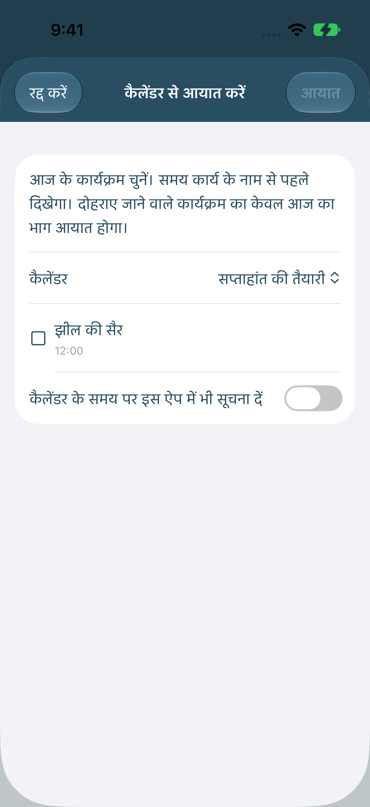
| समारोह | आप क्या करते हैं? |
|---|---|
| कैलेंडर में जोड़ें | अभी लिखो के कार्यों को अपने कैलेंडर पर भेजें। भविष्य के अपडेट से कैलेंडर शेड्यूल बदल जाएगा. |
| कैलेंडर से आयात करें | अपने कैलेंडर से आज की घटनाओं को आज के कार्यों में आयात करें। कैलेंडर पर बाद के अपडेट अभी लिखो की प्रविष्टि को प्रतिस्थापित कर देंगे। |
कैलेंडर में करने योग्य कार्यों को पंजीकृत करना
- अपना कर्सर उस आइटम पर रखें जिसे आप आज या कल के कार्य में भेजना चाहते हैं और शीर्ष पर एक तीर के साथ कैलेंडर पर पोस्ट करें आइकन पर टैप करें।
- कैलेंडर, तिथि, पूरे दिन की उपलब्धता, प्रारंभ और समाप्ति समय और सूचनाओं की जाँच करें और पंजीकृत करें।
- किसी कार्य को संपादित करने के बाद, उसे उसी बटन से अपडेट करने से मौजूदा कनेक्टेड शेड्यूल बदल जाएगा।
पंजीकृत वस्तुओं पर एक लिंक संकेतक दिखाई देता है। आवर्ती कार्यों को कैलेंडर में नहीं भेजा जा सकता. यहां तक कि अगर आप किसी कार्य को पूरा करते हैं, हटाते हैं या अगले दिन के लिए स्थानांतरित करते हैं, तो भी पहले से पंजीकृत कैलेंडर ईवेंट बनाए रखे जाते हैं। कैलेंडर ईवेंट हटाने के लिए, कैलेंडर ऐप का उपयोग करें।
अपने कैलेंडर से आज की घटनाएँ प्राप्त करें
- आज की तारीख के लिए अपनी कार्य सूची खोलें और शीर्ष टूलबार में कैलेंडर और बाएँ तीर के साथ आयात आइकन पर टैप करें। यदि आप सभी टूल नहीं देख पा रहे हैं, तो टूलबार को बाएँ या दाएँ स्लाइड करने का प्रयास करें।
- एक कैलेंडर चुनें और आज के शेड्यूल से आवश्यक वस्तुओं की जांच करें और आयात करें।
- नवीनतम सामग्री को वापस लाने के लिए, अपने कर्सर को आइटम पर घुमाएँ और शीर्ष पर कैलेंडर आइकन पर टैप करें। पूर्वावलोकन का शीर्षक, समय, स्थान और कैलेंडर जांचें, फिर कैलेंडर पर अपडेट दबाएँ।
आप आयातित शेड्यूल का शीर्षक, समय, स्थान और कैलेंडर जानकारी देख सकते हैं। समय को शीर्षक से अलग प्रदर्शित किया जाता है, और पूरे दिन की घटनाओं को पूरे दिन के रूप में प्रदर्शित किया जाता है। पहले से कनेक्टेड शेड्यूल को डुप्लिकेट के रूप में आयात नहीं किया जाएगा। कैलेंडर में आवर्ती घटनाएँ केवल आज के एपिसोड को पुनः प्राप्त करती हैं। पूर्णता जांच केवल अभी लिखो द्वारा प्रबंधित की जाती है।
↑ सामग्री की तालिका के लिए8. खरीदारी सूची का उपयोग करें
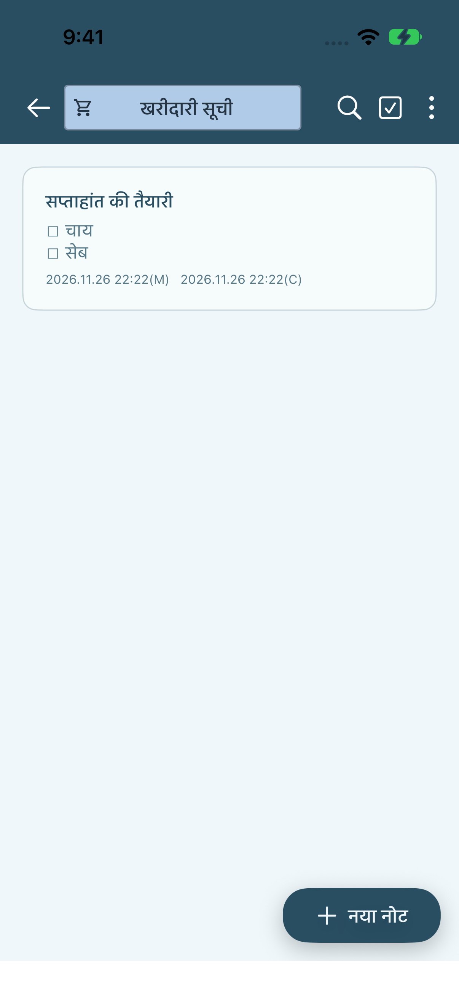
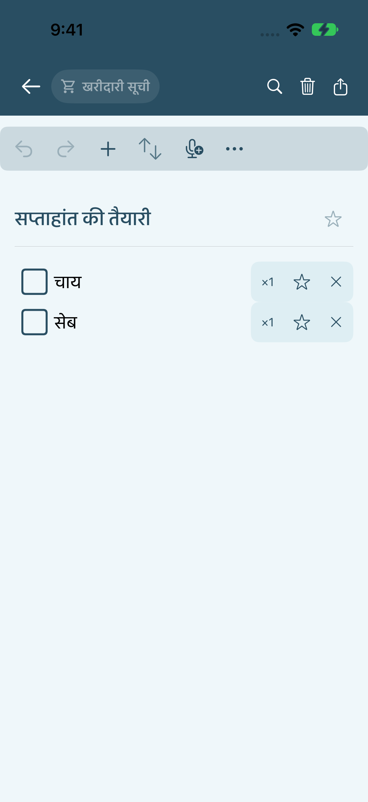
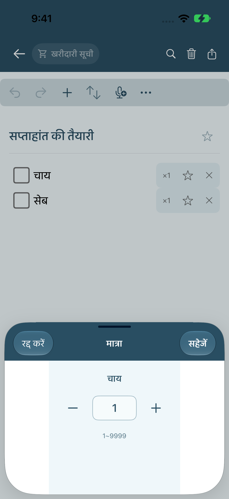
- खरीदारी सूची दराज में एक नया नोट बनाएं और किराने की वस्तु का नाम बताएं।
- आइटम का नाम दर्ज करें और आइटम के बाद मात्रा (×संख्या) दबाएँ।
- −·＋ बटन का उपयोग करके या संख्याएँ दर्ज करके मात्रा निर्धारित करें। डिफ़ॉल्ट 1 है और इनपुट 1 से 9999 तक है।
- एक बार जब आप आइटम खरीद लें, तो उसके सामने चेकबॉक्स पर क्लिक करें। कृपया उन वस्तुओं पर एक सितारा लगाएं जिन्हें आपको अवश्य खरीदना चाहिए।
आप प्रत्येक किराने की वस्तु के लिए अनेक सूचियाँ बना सकते हैं। आइटम जोड़ने और मोड स्थानांतरित करने की जानकारी के लिए, आज का कार्य सूची उपकरण देखें। मात्रा, स्टार और डिलीट बटन सीधे शॉपिंग आइटम के पीछे उपलब्ध हैं। खरीदारी सूचियों में दोहराई जाने वाली सेटिंग नहीं होती है. विजेट का उपयोग करने के निर्देशों के लिए, कृपया होम स्क्रीन विजेट का उपयोग करना देखें।
↑ सामग्री की तालिका के लिए9. होम स्क्रीन विजेट का उपयोग करना
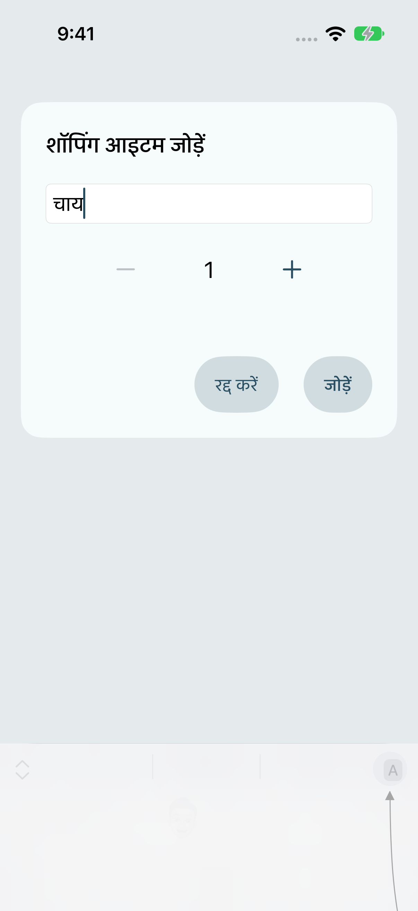
विजेट जोड़ें
होम स्क्रीन पर खाली जगह को दबाकर रखें। संपादन मेनू से विजेट गैलरी खोलें, NoteOrNever खोजें और आज के कार्य या खरीदारी की सूची का विजेट जोड़ें।
आप विगेट्स में क्या कर सकते हैं
- जब आप आइटम लाइन दबाते हैं, तो यह पूर्ण/अपूर्ण या खरीदी गई/बिना खरीदी के बीच बदल जाती है।
- ＋ उस सूची में आइटम डालने के लिए ऐप की त्वरित ऐड स्क्रीन खोलता है।
- ऐप में उस नोट को खोलने के लिए किसी शीर्षक पर टैप करें या नोट खोलें।
- तारांकन चिह्न/दोहराएँ चिह्न केवल प्रदर्शन प्रयोजनों के लिए है। ऐप में महत्वपूर्ण अंकन, पुनरावृत्ति, मात्रा और क्रम परिवर्तन किए जाते हैं।
आज का कार्य विजेट आज की तारीख के लिए सूची दिखाता है, और शॉपिंग विजेट सबसे हाल ही में संशोधित सक्रिय सूची दिखाता है। शेष गिनती अपूर्ण वस्तुओं की संख्या है और वस्तु मात्रा का कुल नहीं है।
आदेश को प्रदर्शित करें
आदेश अपूर्ण महत्वपूर्ण → अपूर्ण सामान्य → पूर्ण महत्वपूर्ण → पूर्ण सामान्य है। एक ही बंडल में वस्तुओं का मूल क्रम बनाए रखता है। विजेट सॉर्टिंग से नोट के भीतर का क्रम नहीं बदलता है।
बंद दराज के लिए विजेट
जब आप किसी ड्रॉअर को लॉक करते हैं, तो विजेट उसकी सामग्री को छुपा देता है। भले ही आप ऐप से प्रमाणित करें और इसे संक्षेप में खोलें, विजेट छिपा हुआ रहता है। सामग्री की जांच करने के लिए ऐप खोलें, या विजेट में इसे फिर से प्रदर्शित करने के लिए ड्रॉअर को अनलॉक करें। लॉकिंग के दौरान आवर्ती आइटम के लिए दिनांक प्रसंस्करण जारी रहता है।
↑ सामग्री की तालिका के लिए10. नोट्स ढूंढना और रीसायकल बिन का प्रबंधन करना
खोज सीमा
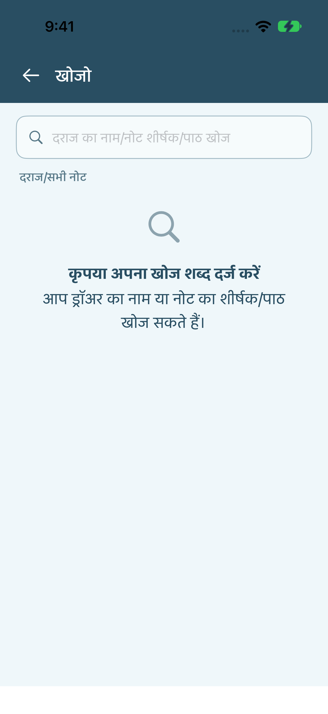
| बटन का स्थान ढूंढें | किसकी तलाश है |
|---|---|
| षिटनीयर | एकाधिक दराजों के नाम और मेमो शीर्षक/मुख्य भाग |
| दराज के अंदर | वर्तमान दराज में नोट का शीर्षक और मुख्य भाग |
| नोट में | वर्तमान नोट के मुख्य भाग से वर्णों का मिलान होता है |
दराज में आवर्धक लेंस को टैप करें, एक खोज शब्द दर्ज करें, और परिणामों में दराज या नोट को टैप करें। दराज में, केवल खोज शब्दों वाले नोट सूची में रहते हैं। नोट के भीतर, मेल खाने वाले अक्षरों को हाइलाइट किया गया है और सामग्री अपरिवर्तित रहती है। एक्स ढूँढना बंद कर देता है। मैनुअल ढूंढने के लिए, कृपया मैनुअल का उपयोग करना देखें।
लॉक किए गए दराजों को डिफ़ॉल्ट खोज लक्ष्य से बाहर रखा गया है। बंद दराज सामग्री की खोज करें आप शामिल करें (प्रमाणीकरण की आवश्यकता है) पर क्लिक करके प्रमाणित करके उन्हें शामिल कर सकते हैं। प्रमाणीकरण के बाद एन्क्रिप्टेड सामग्री भी खोजी जाती है।
एकाधिक नोट चुनें
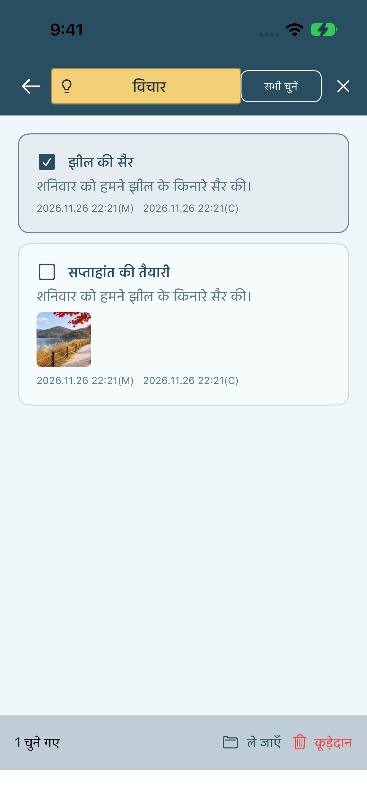
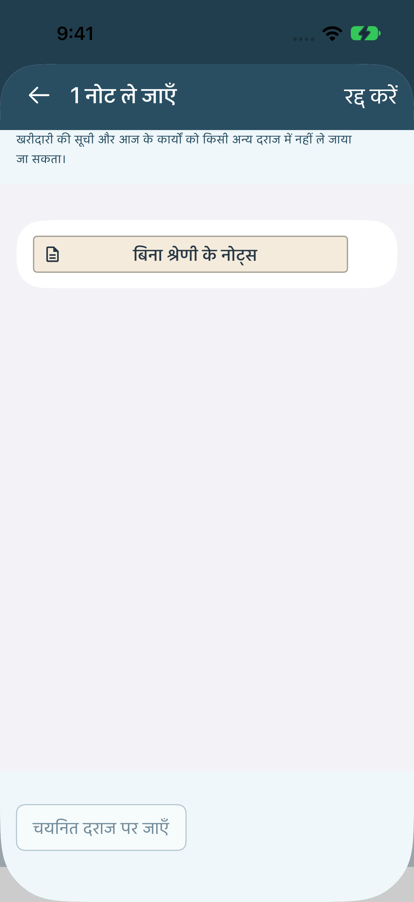
- ड्रॉअर के हेडर में सेलेक्ट बटन (चेकमार्क) दबाएँ।
- सूची से वह नोट चुनें जिसे आप संसाधित करना चाहते हैं।
- नीचे दराज ले जाएँ या कूड़ेदान में ले जाएँ पर टैप करें। ड्रॉअर को हिलाते समय, गंतव्य का चयन करें और मूव बटन से इसकी पुष्टि करें। केवल नियमित नोट जिन्हें स्थानांतरित किया जा सकता है, उन्हें दूसरे दराज में ले जाया जा सकता है।
यदि आप कार्रवाई के बाद नीचे दिए गए निर्देशों में पूर्ववत करें देखते हैं, तो आप अभी की गई कार्रवाई को वापस करने के लिए उस पर टैप कर सकते हैं। डिफ़ॉल्ट प्रदर्शन समय लगभग 5 सेकंड है और आपकी पहुंच-योग्यता सेटिंग्स के आधार पर यह अधिक लंबा हो सकता है। अपने चयन को अंतिम रूप देने के लिए वापस दबाएँ।
नोट को कूड़ेदान में ले जाएं
संपादन नोट हेडर में मूव टू ट्रैश बटन दबाएं और पुष्टि करें। शीर्षक, मुख्य भाग या अनुलग्नकों के बिना खाली नोट्स के लिए बटन अक्षम है। किसी आइटम के बाद एक एक्स एक पंक्ति को हटा देता है, और मेमो हेडर में ट्रैश कैन पूरे मेमो को हटा देता है।
रीसायकल बिन से पुनर्स्थापित करें
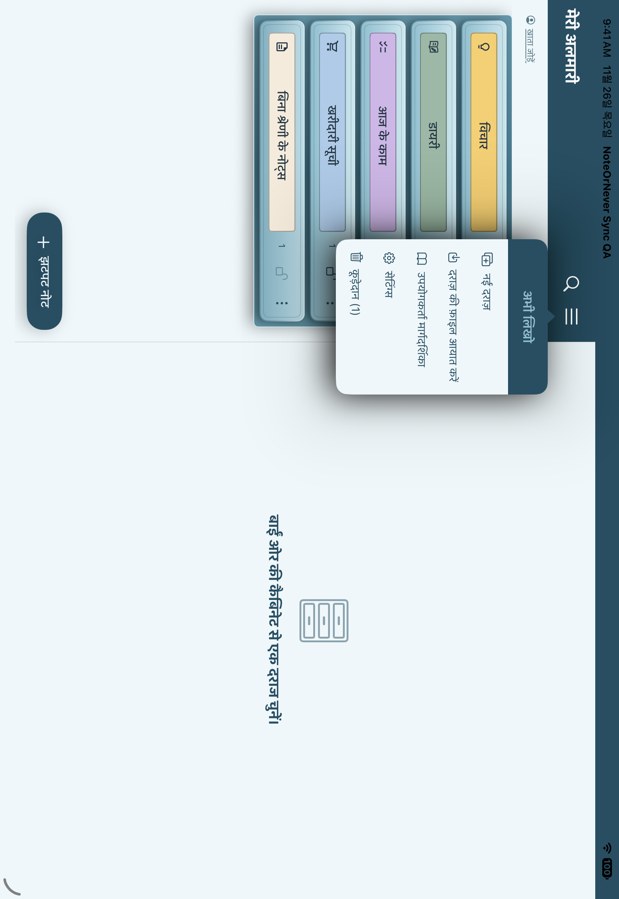
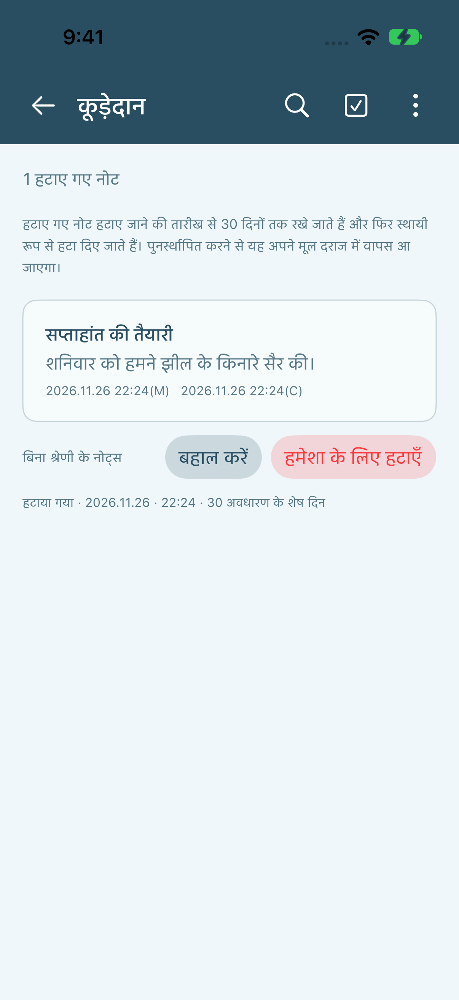
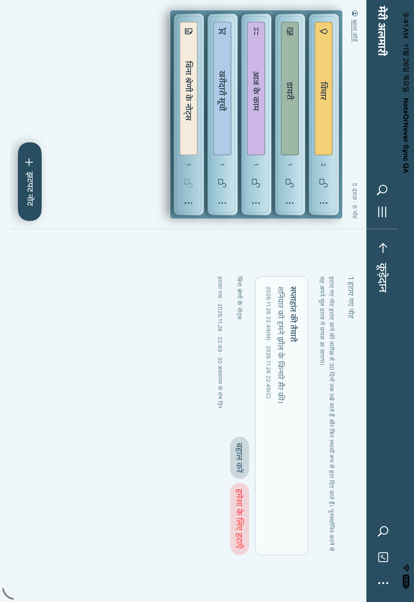
- दराज़ों का मेनू (☰) खोलें और कूड़ेदान दबाएँ।
- नोट कार्ड के लिए रीस्टोर/परमानेंट डिलीट बटन वाली लाइन के बाईं ओर, मूल ड्रॉअर के आइकन और नाम की जांच करें। जिस नोट को आप पुनर्जीवित करना चाहते हैं उसका बहाल करें दबाएँ। यदि आवश्यक हो, तो पहले नोट की सामग्री जांचने के लिए उसे खोलें।
- मूल दराज में पुनर्स्थापित नोटों की जाँच करें। ड्रॉअर को हटाते समय, अवर्गीकृत नोटों में चले गए नोटों को अवर्गीकृत नोटों में जांचा जा सकता है।
लॉक किए गए ड्रॉअर नोट देखने के लिए, ऊपर लॉक किए गए ड्रॉअर नोट शामिल करें (प्रमाणीकरण आवश्यक) से प्रमाणित करें। रीसायकल बिन में जाने के 30 दिन बाद, यह किसी भी अनुलग्नक के साथ स्वचालित रूप से और स्थायी रूप से हटा दिया जाएगा। डिवाइस की स्थिति के आधार पर, सफ़ाई में देरी हो सकती है। यदि आप इसे 30 दिनों से पहले पुनर्स्थापित करते हैं, तो इसे सफ़ाई से बाहर कर दिया जाएगा, और यदि आप इसे रीसायकल बिन में वापस ले जाते हैं, तो तब से इसे फिर से गिना जाएगा।
↑ सामग्री की तालिका के लिए11. दराजों को लॉक और एन्क्रिप्ट करें
पासवर्ड बदलने या रिकवरी कुंजी से रीसेट करने पर पुराने सत्र समाप्त होते हैं। नया सत्र उसी एन्क्रिप्शन कुंजी से नोट और संलग्नक सुरक्षित रखता है और अन्य डिवाइस से सिंक कर सकता है। बायोमेट्रिक प्रमाणीकरण फिर जोड़ें। iOS पहले से सेट एन्क्रिप्शन कॉन्फ़िगरेशन को रिकवरी जानकारी से नहीं बदलता।
| सुरक्षा विधि | अंतर |
|---|---|
| दराज़ लॉक | उपयोगकर्ताओं को फ़िंगरप्रिंट या 4-अंकीय पिन प्रमाणीकरण का उपयोग करके ऐप्स में सामग्री खोलने से रोकता है। |
| दराज़ एन्क्रिप्शन | मेमो का शीर्षक, मुख्य भाग और अनुलग्नक एन्क्रिप्टेड और संग्रहीत होते हैं, और डेटा बैकअप और रीसायकल बिन में भी एन्क्रिप्टेड रहता है। |
एन्क्रिप्शन उस बैकअप ड्रॉअर पर लागू नहीं होता है जिसमें आज की टू-डू सूची, खरीदारी सूची, अवर्गीकृत मेमो और अन्य ऐप डेटा होता है। महत्वपूर्ण व्यक्तिगत रिकॉर्ड को एक नियमित दराज में संग्रहीत करें जिसे एन्क्रिप्ट किया जा सके। आप आज के कार्य और खरीदारी सूचियों के लिए डिफ़ॉल्ट लॉक का उपयोग कर सकते हैं।
बुनियादी दराज का ताला
सेटिंग्स → ड्रॉअर लॉक में पिन, फ़िंगरप्रिंट का उपयोग और ऐप से बाहर जाने के बाद अपने-आप लॉक होने का समय तय करें। खुले ताले पर टैप करने से ड्रॉअर लॉक होता है। लॉक किए गए ड्रॉअर पर टैप करके और प्रमाणीकरण पूरा करके उसे खोलें। विजेट के व्यवहार के लिए होम स्क्रीन विजेट का उपयोग करना देखें।
पहली बार एन्क्रिप्शन सेट करना
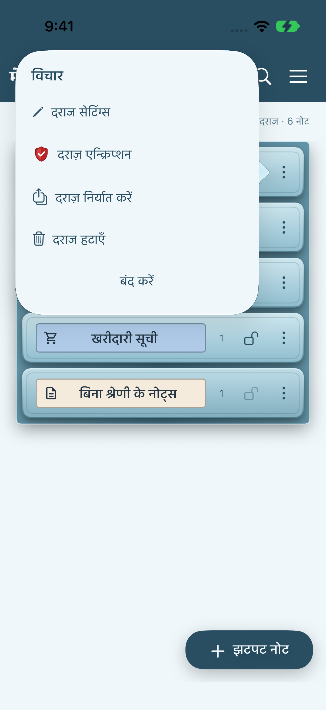
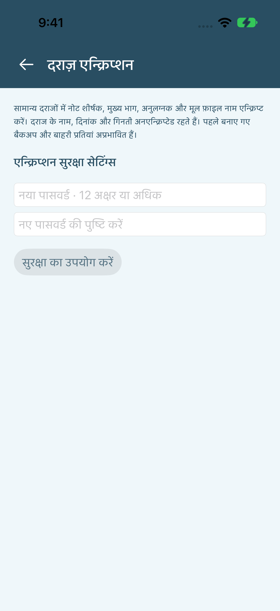
- जिस सामान्य दराज को आप सुरक्षित रखना चाहते हैं, उसके लिए अधिक → दराज एन्क्रिप्ट करें पर टैप करें।
- अपना एन्क्रिप्शन पासवर्ड दो बार दर्ज करें (कम से कम 12 अक्षर लंबा) और पासवर्ड सेट करें पर टैप करें। यह पासवर्ड 4 अंकों वाले लॉक पिन से अलग होता है.
- प्रदर्शित पुनर्प्राप्ति कुंजी को ऐप के बाहर किसी सुरक्षित स्थान पर संग्रहीत करें, जैसे कागज पर या पासवर्ड मैनेजर में।
- स्टोरेज की पुष्टि करें की जाँच करें और पूरा करने के लिए पासवर्ड सेट करें पर क्लिक करें।
- जब पूछा जाए कि यह ड्रॉअर अभी तक एन्क्रिप्टेड नहीं है, तो लागू करने के लिए एन्क्रिप्शन चालू करें पर क्लिक करें।
अधिक → ड्रॉअर एन्क्रिप्शन में एक-दूसरे ड्रॉअर के लिए सुरक्षा प्रमाणित करें और लागू करें। एन्क्रिप्शन ड्रॉअर एक ही पासवर्ड का उपयोग करते हैं, इसलिए प्रारंभ में सेट किए गए पासवर्ड और पुनर्प्राप्ति कुंजी का उपयोग करें। यदि आप सेटअप पूरा करने से पहले रद्द करते हैं, तो उस पुनर्प्राप्ति कुंजी का उपयोग न करें जो आपने देखी थी।
शील्ड बैज और लॉक साइन
ड्रॉअर लेबल के ऊपरी दाएं कोने में लाल शील्ड, सफ़ेद चेक बैज और ड्रॉअर के अंदर शीर्षक लेबल इंगित करता है कि उस ड्रॉअर पर एन्क्रिप्शन लागू किया गया है। भले ही आप सामग्री को प्रमाणित करें और खोलें, बैज गायब नहीं होगा क्योंकि एन्क्रिप्शन बनाए रखा गया है। लॉक का मतलब एक दराज है जिसे प्रमाणीकरण के बाद खोला जाना चाहिए, और एक शील्ड का मतलब है कि डेटा एन्क्रिप्ट किया गया है और संग्रहीत किया गया है।
सामान्य दराज खोलना और स्वचालित लॉकिंग
एन्क्रिप्टेड दराज़ को एन्क्रिप्शन पासवर्ड या इस डिवाइस से जुड़े Face ID या Touch ID से खोलें। दराज़ से बाहर निकलने पर यह फिर लॉक हो जाती है।
बायोमेट्रिक पहचान जोड़ना और पासवर्ड बदलना
सेटिंग में दराज़ एन्क्रिप्शन खोलकर इस डिवाइस पर बायोमेट्रिक पहचान जोड़ें या पासवर्ड बदलें। Face ID या Touch ID दोबारा दर्ज करने पर एन्क्रिप्शन पासवर्ड से खोलकर फिर से जोड़ें।
पासवर्ड का बदलाव सभी एन्क्रिप्टेड ड्रॉअर पर लागू होता है। बदलाव से पहले बनाए गए बैकअप को खोलने के लिए उसे बनाते समय इस्तेमाल किया गया पासवर्ड चाहिए। पासवर्ड बदलने के बाद नया बैकअप बनाएँ।
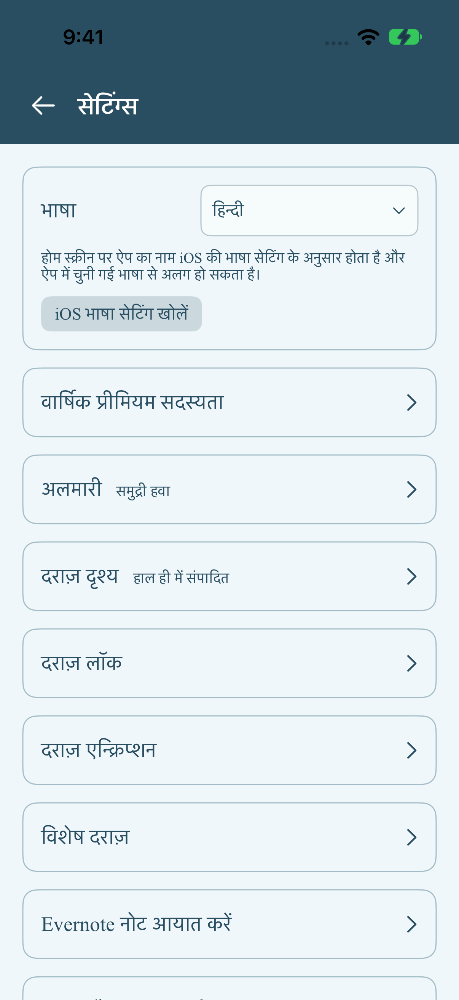
जब आप अपना पासवर्ड भूल जाते हैं
- अपना पासवर्ड भूल गए? पर टैप करें प्रमाणीकरण स्क्रीन पर.
- अपनी सहेजी गई पुनर्प्राप्ति कुंजी और नया पासवर्ड दर्ज करें, अपना पासवर्ड रीसेट करें, और ओपन दबाएँ।
नया पासवर्ड सभी एन्क्रिप्टेड ड्रॉअर पर लागू होता है। रद्द करने पर प्रमाणीकरण स्क्रीन वापस खुलती है। ऐप पुनर्प्राप्ति कुंजी दोबारा नहीं दिखाता, इसलिए पहली बार सेटअप करते समय उसे सही-सही लिखकर सुरक्षित रखें।
एन्क्रिप्शन सुरक्षा हटाएँ और ड्रॉअर हटाएँ
ड्रॉअर में, More → डिक्रिप्ट ड्रॉअर पर जाएं, प्रमाणित करें, ड्रॉअर का नाम जांचें और अनप्रोटेक्ट दबाएँ। चयनित ड्रॉअर में डेटा अनएन्क्रिप्टेड संग्रहीत किया जाएगा। यदि आप रद्द करते हैं, तो आपकी सुरक्षा बरकरार रहेगी। किसी ड्रॉअर को हटाने के लिए, उसे असुरक्षित करने के बाद, More से डिलीट ड्रॉअर का चयन करें।
सुरक्षा कवरेज की जाँच करें
- ड्रॉअर का नाम, नोटों की संख्या, निर्माण और संशोधन की तारीखें और अनुलग्नक प्रकार एन्क्रिप्टेड नहीं हैं। ड्रॉअर नाम में संवेदनशील सामग्री शामिल न करें।
- यह ऐसी सुविधा नहीं है जो संपूर्ण बैकअप को एन्क्रिप्ट करती है. केवल एन्क्रिप्टेड दराज की सामग्री सुरक्षित है; नियमित दराज और आज की कार्य/खरीदारी सूची एन्क्रिप्टेड नहीं हैं।
- एन्क्रिप्शन से पहले बनाए गए बैकअप या बाहरी ऐप्स को भेजी गई प्रतियां स्वचालित रूप से एन्क्रिप्ट नहीं की जाती हैं। बाह्य रूप से साझा की गई फ़ाइलें स्वयं प्रबंधित करें.
12. बैकअप/पुनर्स्थापना और एवरनोट आयात करें
नए डिवाइस पर जाएँ
केवल बैकअप है
नवीनतम बैकअप चुनें। बहाल करने पर इस डिवाइस के नोट और अटैचमेंट बदल जाएँगे। पुष्टि करने से पहले ज़रूरी सामग्री फ़ाइल में सहेजें।
केवल सिंक डेटा है
पुराने डिवाइस वाला खाता जोड़ें। सिंक → विवरण में सिंक डेटा से रिकवरी चुनें। इससे स्थानीय बदलाव भेजे बिना डेटा डाउनलोड होगा।
दोनों उपलब्ध हैं
पहले बैकअप बहाल करें। बैकअप के बाद दूसरे डिवाइस ने बदलाव सिंक किए हों तभी अभी सिंक करें।
अंत में पुराने डिवाइस का एक नोट ढूँढें और उसका अटैचमेंट खोलकर देखें।
ऑटो सिंक और अपलोड किए बिना पुनर्प्राप्ति
कारण और अगला कदम देखने के लिए बाईं ओर स्थिति टैप करें। छोटी स्क्रीन पर केवल आइकन दिख सकता है। मुफ़्त मोड में स्थिति छिपी रहती है।
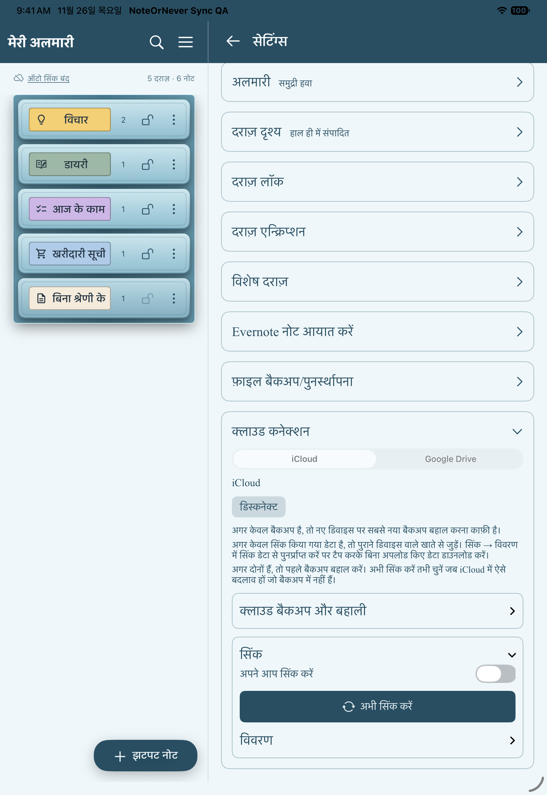
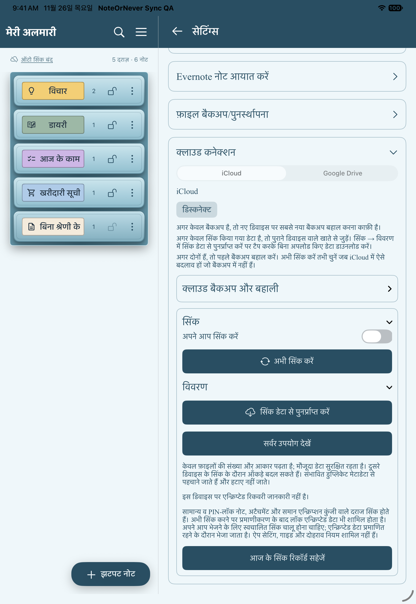
सिंक स्थिति समझें
एक ही अटैचमेंट वाली अलग-अलग नोट प्रविष्टियाँ अलग रहती हैं। पहले सिंक से पूर्व बने बैकअप की बहाल नोट सर्वर वाली प्रति से अलग हो तो दोनों संस्करण रह सकते हैं। हटाने से पहले दोनों खोलकर देखें।
अस्थायी अनुरोध सीमा पर पुनः प्रयास होता है। क्लाउड भरने पर जगह खाली करें। अनुमति हटने पर मूल खाता दोबारा जोड़ें। खराब अटैचमेंट सर्वर से सुधारने की कोशिश होती है। सुधार न होने पर उस नोट को रोककर बाकी सिंक होते हैं। यदि बदलावों का क्रम पता न हो तो टकराव की प्रति बन सकती है।
सामान्य सिंक वर्तमान में सुरक्षित नोट और दराज ID के सभी पुराने संशोधन, स्थानांतरण और हटाने के रिकॉर्ड अलग रखता है और अन्य सामान्य डेटा का काम जारी रखता है। अलग रखा इतिहास और नहीं भेजे गए बदलाव डिवाइस पर सुरक्षित रहते हैं। रिकवरी जानकारी भेजते समय एन्क्रिप्शन प्रमाणीकरण समाप्त होने पर कतार बनी रहती है; फिर से प्रमाणित करें और सिंक करके दोबारा प्रयास करें। वास्तविक रिकवरी सत्यापन विफलताएँ त्रुटि के रूप में दिखाई जाती हैं।
पुनर्प्राप्ति के दौरान नोट, संलग्नक या रिकवरी जानकारी अपलोड नहीं होती। मौजूदा संपादन और लंबित बदलाव डिवाइस पर रहते हैं और बाद में सिंक करने पर भेजे जाते हैं।
सिंक में ऑटो सिंक चालू या बंद करें। अभी सिंक करें इसे बदले बिना एक बार चलता है। केवल प्राप्त करने वाली रिकवरी स्थानीय बदलाव नहीं भेजती।
एन्क्रिप्टेड रिकवरी जानकारी मिलने पर पासवर्ड या रिकवरी कुंजी से सत्यापित करें, या केवल सामान्य डेटा पुनर्प्राप्त करें। Drive पर रिकवरी जानकारी का सत्यापन नोट भेजने की स्थिति से अलग है। रोकने पर पूरे चरण और न भेजे गए बदलाव सुरक्षित रहते हैं। जारी रखने के लिए वही कार्य फिर चलाएँ। सेव करने में त्रुटि के बाद सामग्री जाँचें और फिर कोशिश करने से पहले संपादन व सेव पूरा करें।
स्थानीय फ़ाइलों का बैकअप लें और उन्हें पुनर्स्थापित करें
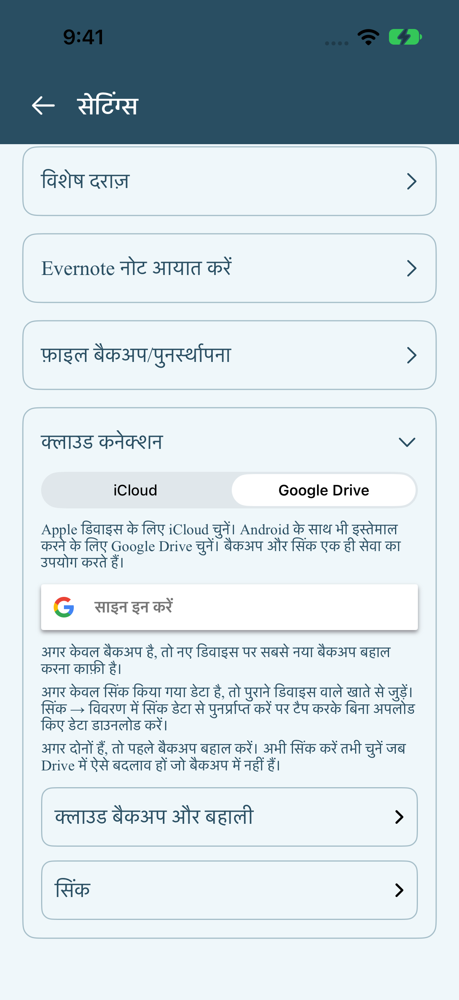
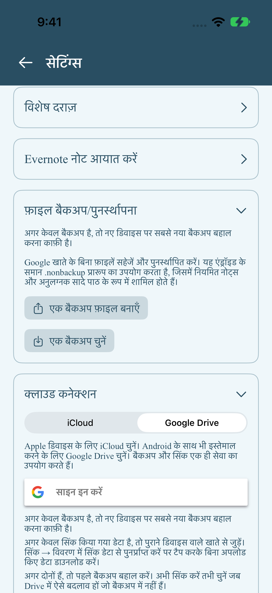
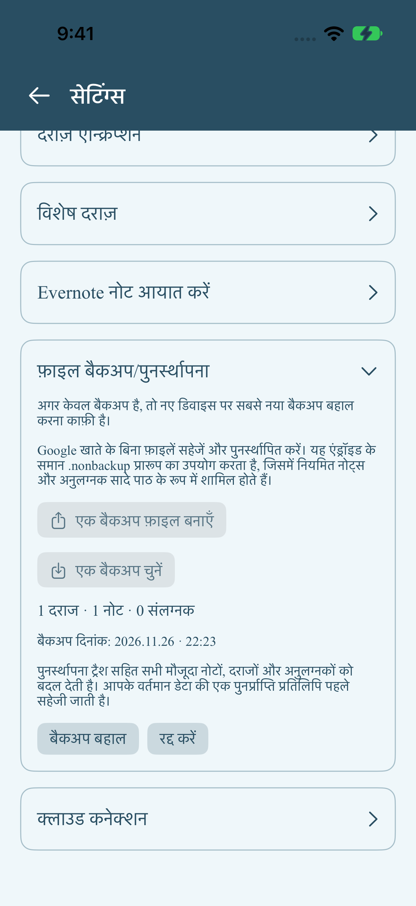
- सेटिंग्स के नीचे लोकल बैकअप और रीस्टोर खोलें।
- बैकअप फ़ाइल सहेजें पर टैप करें और फ़ाइलें ऐप में सहेजने के लिए एक फ़ोल्डर और फ़ाइल नाम चुनें। .nonbackup ड्रॉअर, मेमो, ट्रैश, सेटिंग्स और संलग्न फ़ाइलों को एक फ़ाइल में एक साथ संग्रहीत करता है।
- फ़ाइल से पुनर्स्थापित करें टैप करें और सहेजी गई बैकअप फ़ाइल का चयन करें। दिनांक, दराजों की संख्या, नोट्स, अनुलग्नक और प्रतिस्थापन निर्देश जांचें।
- पुनर्स्थापना पर क्लिक करने से वर्तमान डेटा बैकअप सामग्री से बदल जाता है। यह वर्तमान डेटा के साथ विलय करने का ऑपरेशन नहीं है। यदि आप रद्द करते हैं तो यह लागू नहीं होगा.
- पुनर्स्थापना से ठीक पहले की स्थिति डिवाइस पर संग्रहीत होती है। आप अपने अंतिम पुनर्स्थापना को पूर्ववत करने के लिए वापस जा सकते हैं।
फ़ाइल बैकअप के लिए खाता जोड़ना ज़रूरी नहीं है। फ़ाइल ऐप में अपने iPhone, iPad या iCloud Drive का स्थान चुनें। लॉक दराज़ बहाल करने के लिए डिवाइस पर PIN सेट करें। एन्क्रिप्टेड सामग्री का पासवर्ड या रिकवरी जानकारी संभालकर रखें।
iCloud / Google Drive बैकअप एक मैनुअल बैकअप है
सेटिंग्स → क्लाउड कनेक्शन → क्लाउड बैकअप और बहाली खोलें। सहेजने के लिए चुनी गई सेवा का बैकअप बटन टैप करें। बहाल करने के लिए सूची लोड करें और तारीख व नोटों की संख्या देखकर बैकअप चुनें।
ड्रॉअर, मेमो, अटैचमेंट, रिपीट सेटिंग्स और कूड़ेदान में बचे नोट भी बैकअप में शामिल हैं। कोई भी बड़ा बदलाव करने के बाद और फ़ोन बदलने से पहले, एक नया बैकअप बनाएं और उसे पूरा करने के लिए निर्देशों का पालन करें।
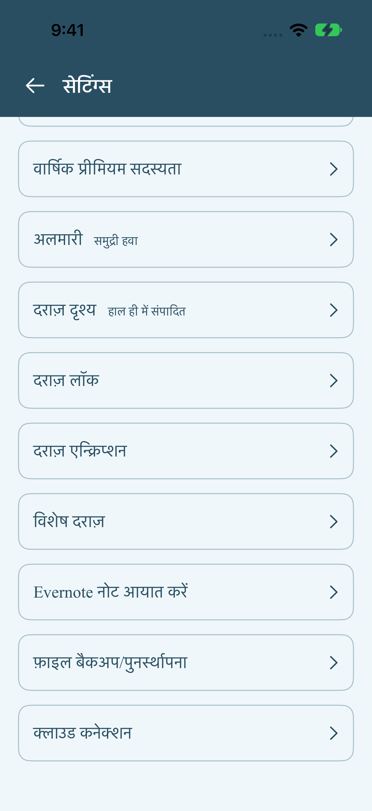
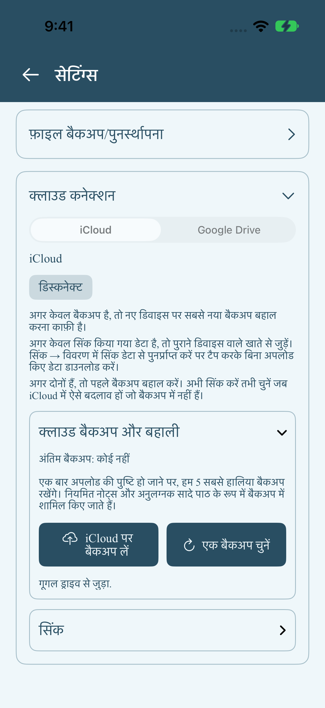
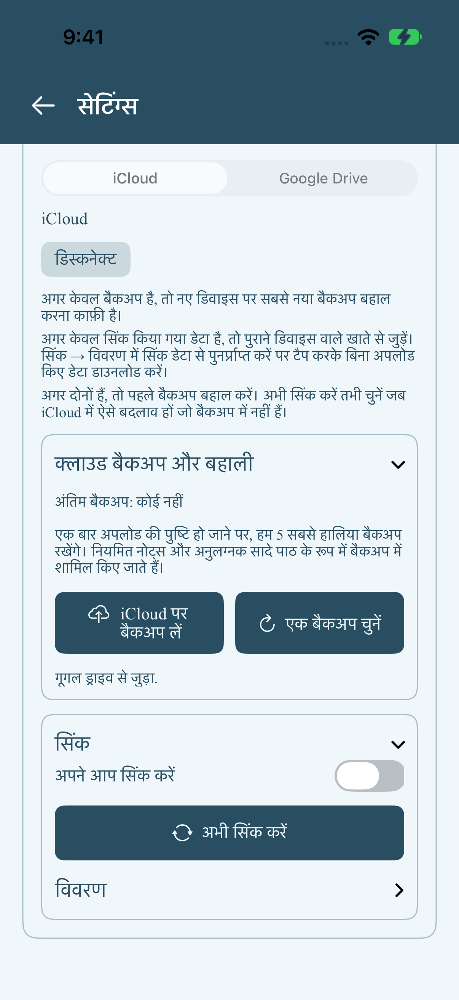
बैकअप भंडारण और विलोपन
एक बार जब नया बैकअप सफलतापूर्वक अपलोड और पुष्टि हो जाता है, तो पुराने बैकअप स्वचालित रूप से और स्थायी रूप से हटा दिए जाते हैं, सबसे हाल के पांच को छोड़कर। एक असफल बैकअप मौजूदा बैकअप को नहीं मिटाता है। अवधारण मानदंड अवधि नहीं बल्कि संख्या है, इसलिए यदि आप बार-बार बैकअप लेते हैं, तो सभी पांच हाल के हो सकते हैं।
इसे मैन्युअल रूप से मिटाने के लिए, बैकअप से रीस्टोर के साथ सूची खोलें और जिस बैकअप को आप मिटाना चाहते हैं उसके लिए डिलीट दबाएँ। एक बार जब आप फ़ाइल नाम की पुष्टि कर लेते हैं और इसे स्थायी रूप से हटा देते हैं, तो इसे पुनर्स्थापित नहीं किया जा सकता है। आपके वर्तमान फ़ोन के नोट मिटाए नहीं जाएंगे. लंबी अवधि के बैकअप के लिए, स्वचालित सफाई से पहले उन्हें अलग से संग्रहीत करें।
बैकअप से पुनर्स्थापित किया जा रहा है
Evernote नोट आयात करें
- अपने पीसी पर एवरनोट ऐप में, उन नोट्स या नोटबुक को निर्यात करें जिन्हें आप ENEX (.enex) में ले जाना चाहते हैं। यदि बॉडी एन्क्रिप्शन है, तो पहले उसे अक्षम करें।
- ENEX फ़ाइल को अपने फ़ोन आदि के डाउनलोड फ़ोल्डर में कॉपी करें।
- सेटिंग्स से एक फ़ाइल चुनें → एवरनोट नोट्स आयात करें → ENEX फ़ाइल चुनें।
- पूर्वावलोकन में शीर्षक और संख्या की जाँच करें और Evernote नोट आयात करें पर क्लिक करें।
- एवरनोट से आयातित मेमो ड्रॉअर में सामग्री और अनुलग्नकों की जांच करें और उनका बैकअप लें।
शीर्षक, मुख्य भाग, चेकमार्क, मूल प्रारूप, अनुलग्नक और निर्माण/संशोधन तिथियां प्राप्त करें। टैग और मूल पता पाठ के अंत में प्रदर्शित होते हैं। जटिल तालिकाएँ या प्रारूप भिन्न हो सकते हैं और अधिसूचना, कार्य और नोटबुक संरचनाएँ स्वचालित रूप से परिवर्तित नहीं होंगी। आवश्यक नोट्स को किसी अन्य नियमित दराज में व्यवस्थित करें।
एक ही सामग्री की डुप्लिकेट को छोड़ दिया जाएगा, लेकिन परिवर्तित सामग्री या संशोधन तिथि वाली सामग्री को अलग नोट्स के रूप में जोड़ा जा सकता है। यह स्वचालित रूप से एवरनोट के साथ समन्वयित नहीं होता है या मौजूदा नोट्स को अधिलेखित नहीं करता है। मूल नोट और ENEX फ़ाइलें हटाई नहीं जाएंगी। यदि फ़ाइल बड़ी है या विफल है, तो इसे छोटे बैचों में विभाजित करें और पहले उनका परीक्षण करें। समर्थित प्रारूप ENEX है और सीमा क्षमता और लंबाई सीमाएँ है।
कृपया उन सामग्रियों का चयन करें जो आपके पास हैं या जिनके पास आयात करने की अनुमति है। आयात को डिवाइस के भीतर संसाधित किया जाता है, और जब आप iCloud / Google Drive बैकअप चलाते हैं, तो आयातित डेटा भी बैकअप में शामिल होता है। मूल ENEX फ़ाइल ड्रॉअर एन्क्रिप्शन द्वारा संरक्षित नहीं है, इसलिए अपनी कॉपी का भी ध्यान रखें। यह फ़ंक्शन Evernote का आधिकारिक साझेदारी/प्रमाणीकरण फ़ंक्शन नहीं है। Evernote®, Bending Spoons US Inc. का ट्रेडमार्क है।
↑ सामग्री की तालिका के लिए13. ऐप सेटिंग्स और मैनुअल का उपयोग करना
मुफ़्त संस्करण में शुरुआती दराज़ समेत सात दराज़ रख सकते हैं। सात होने पर नई दराज़ बनाने और आयात करने पर रोक लगती है। प्रीमियम में विज्ञापन हटते हैं और अतिरिक्त दराज़, नया एन्क्रिप्शन व क्लाउड ट्रांसफ़र उपलब्ध होते हैं। सदस्यता समाप्त होने पर भी मौजूदा दराज़ खोल सकते हैं और एन्क्रिप्ट की गई सामग्री पढ़ या डिक्रिप्ट कर सकते हैं।
सेटिंग्स में क्लाउड कनेक्शन खोलें। Apple डिवाइसों के लिए iCloud और Android के साथ Google Drive चुनें। प्रीमियम से एक समय में एक सेवा जोड़ें। मैन्युअल बैकअप के लिए क्लाउड बैकअप और बहाली, और स्वचालित या मैन्युअल सिंक के लिए सिंक खोलें। यदि इस संस्करण में iCloud उपलब्ध नहीं है, तो फ़ाइल बैकअप इस्तेमाल कर सकते हैं। खरीद के लिए App Store उत्पाद उपलब्ध होना चाहिए।
कनेक्शन हटाने पर स्थानीय नोट और अटैचमेंट सुरक्षित रहते हैं। बैकअप या सिंक वाला मूल खाता दोबारा जोड़ें। दूसरा खाता इस्तेमाल करने से पहले ज़रूरी डेटा फ़ाइल में सहेजें और स्थानीय बैकअप अनुभाग में डिवाइस डेटा रीसेट की अलग से पुष्टि करें।
मेन्यू → सेटिंग → अलमारी खोलें और नाम बदलें। नाम खाली नहीं होना चाहिए और अधिकतम 40 अक्षर हो सकते हैं। इसी कार्ड में नीचे थीम चुनें।
ऐप भाषा
कोरियाई, अंग्रेजी, जापानी, हिंदी, पुर्तगाली (ब्राजील), स्पेनिश और इंडोनेशियाई का समर्थन करता है। भले ही आप भाषा बदल दें, आपके नोट्स की सामग्री नहीं बदलेगी।
अलमारी की थीम
पूर्वावलोकन कार्ड को बाएँ या दाएँ स्लाइड करें और अपनी इच्छित थीम पर क्लिक करें। डिफ़ॉल्ट थीम Sea Breeze है. डिफ़ॉल्ट थीम में Sea Breeze, Blue Sky, Soft Green, Lavender Mist, Korean Paper, Honeycomb, Black and White, Classic Wood है, और मौसमी थीम में वसंत, गर्मी, शरद ऋतु, सर्दी, क्रिसमस है।
थीम रंग स्क्रीन और ऐप आइकन पर लागू होते हैं। जब आप ऐप छोड़ेंगे और स्क्रीन को बंद और चालू करेंगे तो होम स्क्रीन पर ऐप आइकन दिखाई देगा। होम स्क्रीन ऐप के आधार पर नवीनीकरण में देरी हो सकती है। यदि आपने पहले लाइट ओक या वार्म अखरोट का उपयोग किया था, तो यह Sea Breeze के रूप में प्रदर्शित होगा।
नोट दृश्य
सूची का क्रम क्रम और महत्वपूर्ण नोट्स का प्राथमिकता प्रदर्शन निर्धारित करें।
विशेष दराज़
एक बैकअप ड्रॉअर प्रबंधित करें जो डायरी, कार्य सूची, खरीदारी सूची और अन्य ऐप डेटा प्राप्त करता है। वास्तविक दराज के नाम के आगे पेंसिल पर क्लिक करने से दराज की सेटिंग खुल जाती है। क्रिएट बटन का उपयोग करके हटाए गए समर्पित ड्रॉअर को फिर से बनाया जा सकता है। ड्रॉअर हेडर में  नई दराज़ टूल का उपयोग करके एक नियमित ड्रॉअर बनाएं।
नई दराज़ टूल का उपयोग करके एक नियमित ड्रॉअर बनाएं।
लॉक/आयात/बैकअप
ड्रॉअर लॉकिंग और ड्रॉअर एन्क्रिप्शन अध्याय 11, Evernote आयात और क्लाउड में हैं, और स्थानीय बैकअप और पुनर्स्थापना अध्याय 12 में हैं। स्थानीय बैकअप और पुनर्स्थापना सेटिंग्स के नीचे है।
दस्तावेज़ीकरण पढ़ें/ढूंढें/साझा करें
मेन्यू (☰) → उपयोगकर्ता पुस्तिका खोलें। विषय सूची, पाठ खोज और PDF साझा करने का उपयोग करें।
यदि आप हेडर में खोज से एक खोज शब्द दर्ज करते हैं, तो मिलान हाइलाइट हो जाएंगे। परिणाम संख्या और ऊपर और नीचे तीरों पर जाएँ, और X के साथ ढूँढें को बंद करें। शेयर करना मैनुअल को पीडीएफ के रूप में भेजता है। व्याख्यात्मक पाठ और स्क्रीन उदाहरण सेटिंग्स में चयनित भाषा में प्रदर्शित होते हैं। सभी भाषाओं में एक ही आइकन चित्र इस्तेमाल किए जाते हैं।
लिंक खोलने के बाद पिछली जगह पर लौटने के लिए ऊपर मुड़ा हुआ तीर दबाएँ। बंद करने पर पिछली स्क्रीन खुलती है।
गाइड का पाठ और साझा आइकन बिना इंटरनेट के भी उपलब्ध हैं। पहली बार गाइड खोलने पर केवल चुनी हुई भाषा की तस्वीरें डाउनलोड होती हैं। एक बार डाउनलोड होने के बाद, ऐप दोबारा खोलने पर भी तस्वीरें ऑफ़लाइन उपलब्ध रहती हैं। तस्वीरें डाउनलोड न हों तो इंटरनेट से जुड़ें और तस्वीरें फिर से डाउनलोड करने वाला बटन दबाएँ। डाउनलोड पूरा होने से पहले PDF साझा करने पर, अभी तक डाउनलोड न हुई तस्वीरें शामिल नहीं होंगी।
हर बार गाइड खोलने पर ऐप नई तस्वीरों की जाँच करता है। पहले से सहेजी तस्वीरें पहले दिखाई जाती हैं और नई तस्वीरें डाउनलोड व सत्यापन पूरा होने के बाद ही उनकी जगह लेती हैं। इंटरनेट न होने या अपडेट विफल होने पर सहेजी तस्वीरें उपलब्ध रहती हैं।
जब कोई सुविधा काम नहीं करती
- यदि कैमरा, वॉयस, रिकॉर्डिंग और कैलेंडर नहीं खुलते हैं, तो अपनी डिवाइस सेटिंग्स में ऐप अनुमतियां जांचें।
- यदि कैलेंडर सूची खाली है, तो अपने फोन के कैलेंडर ऐप में अपना खाता जांचें और देखें कि आप कौन से कैलेंडर प्रदर्शित करना चाहते हैं।
- यदि आपको कोई कार्य अधिसूचना प्राप्त नहीं होती है, तो अपनी डिवाइस सेटिंग्स में अधिसूचना अनुमति और पावर सेविंग सेटिंग्स की जांच करें।
- यदि क्लाउड बैकअप विफल हो जाता है, तो अपना इंटरनेट कनेक्शन, कनेक्शन खाता और संग्रहण स्थान जांचें।
- यदि आपको स्थानीय बैकअप फ़ाइल नहीं मिल रही है, तो फ़ाइल ऐप में सहेजे गए फ़ोल्डर और .nonbackup एक्सटेंशन की जाँच करें।
क्षमता और लंबाई सीमाएँ
| वस्तु | सीमा |
|---|---|
| मेमो शीर्षक/मुख्य भाग | शीर्षक 200 अक्षर, मुख्य भाग 30,000 अक्षर। हम अनुशंसा करते हैं कि यदि पाठ 10,000 से अधिक वर्णों का है तो आप उसे अनुभागों में लिखें। |
| संलग्न क्षमता | एक फ़ाइल 30एमबी, एक मेमो अटैचमेंट कुल 200एमबी |
| अनुलग्नकों की संख्या | एक नोट में कुल 50 नोट, जिसमें 30 फोटो. |
| फोटो चित्र | मूल फ़ोटो 40 मिलियन पिक्सेल. चित्रों को संपादित/घूमने और सहेजने के लिए लंबे हिस्से पर 2048 पिक्सेल तक का उपयोग किया जा सकता है। |
| एवरनोट आयात करें | एक ENEX 100 MiB (लगभग 105 MB), 5,000 नोट का है। आयातित नोटों पर शीर्षक, मुख्य भाग और अनुलग्नक प्रतिबंध भी लागू होते हैं। |
| स्थानीय·Google Drive बहाली | 2GiB तक बैकअप फ़ाइलें। बड़े बैकअप के लिए अधिक समय और संग्रहण स्थान की आवश्यकता होती है। |
यदि आप प्रतिबंधों का सामना करते हैं, तो नोट्स या फ़ाइलों को विभाजित करने के निर्देशों की जाँच करें। यदि रिकॉर्डिंग 30 मिनट से अधिक लंबी है, तो इसे अलग से संग्रहीत करने की अनुशंसा की जाती है, और फ़ाइल आकार सीमा भी लागू होती है। बैकअप लेने, पुनर्स्थापित करने, संलग्न करने या एन्क्रिप्ट करने से पहले अपने फ़ोन पर स्थान खाली कर लें।
↑ सामग्री की तालिका के लिए